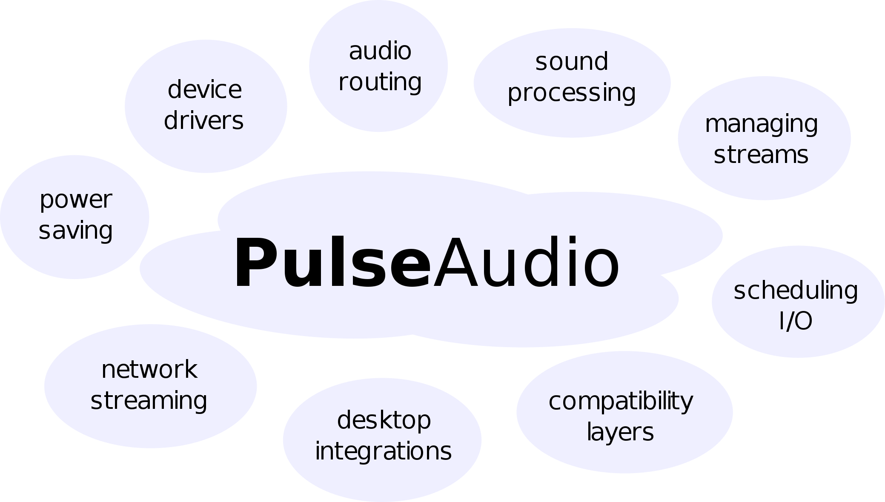

Diagram of PulseAudio
Pipewire is an alternative.
Preface
I’m working on the Roc Toolkit open-source project, a development kit for realtime audio streaming over the network. You can read more about the project in these two articles: 1, 2.
We decided to implement a set of PulseAudio modules that will allow PulseAudio to use Roc as a network transport. Many Linux distros employ PulseAudio, and their users will be able to improve network service quality without changing the workflow. This led me to dig into PulseAudio internals and eventually to this document.
PulseAudio has Documentation page covering many specific problems that may be encountered by user and developer. Modules page contains a complete list of existing modules with parameters. D-Bus API and C API are also documented well.
Unfortunately, the available documentation doesn’t give a bird-eye view and an explanation of PulseAudio features and design and doesn’t cover many implementation details.
In result, the overall picture remains unclear. Advanced configuration looks mysterious because one need to understand what happens under the hood first. The learning curve for the module writer is high too.
This document tries to fill the gap and provide an overview of the PulseAudio features, architecture, and internals. More precisely, it has three goals:
describe the available features
explain their underlying design and important implementation details
provide a starting point for writing clients and server modules
It does not provide a detailed reference or tutorial for PulseAudio configuration and APIs. Further details can be obtained from the official documentation (for configuration and client APIs) and from the source code (for internal interfaces).
I’m not a PulseAudio developer. This document reflects my personal understanding of PulseAudio, obtained from the source code, experiments, official wiki, mailing lists, and blog articles. It may be inaccurate. Please let me know about any issues.
PulseAudio tends to trigger flame wars, which I believe are non-constructive. This document tries to be neutral and provide an unbiased overview of the implemented features and design.
PulseAudio is a sound server for POSIX OSes (mostly aiming Linux) acting as a proxy and router between hardware device drivers and applications on single or multiple hosts.
PulseAudio manages all audio applications, local and network streams, devices, filters, and audio I/O. It provides an abstraction layer that combines all this stuff together in one place.
Programmable behavior
A rich API provides methods for inspecting and controlling all available objects and their both persistent and run-time properties. This makes it possible to replace configuration files with GUI tools. Many desktop environments provide such tools.
Automatic setup
PulseAudio is designed to work out of the box. It automatically detects and configures local devices and sound servers available in the local network. It also implements numerous policies for automatic audio management and routing.
Flexibility
PulseAudio provides a high flexibility for the user. It’s possible to connect any stream of any application to any local or remote device, configure per-stream and per-device volumes, construct sound processing chains, and more.
Extensibility
PulseAudio provides a framework for server extensions, and many built-in features are implemented as modules. Non-official third-party modules exist as well, however, the upstream doesn’t provide a guarantee of a stable API for out-of-tree modules.
The following list gives an idea of the features implemented in PulseAudio.
Protocols and networking
PulseAudio supports a variety of network protocols to communicate with clients, remote servers, and third-party software.
Device drivers
PulseAudio supports several backends to interact with hardware devices and controls. It supports hotplug and automatically configures new devices.
Sound processing
PulseAudio implements various sound processing tools, like mixing, sample rate conversion, and acoustic echo cancellation, which may be employed manually or automatically.
Sample cache
PulseAudio implements an in-memory storage for short named batches of samples that may be uploaded to the server once and then played multiple times.
Stream management
PulseAudio manages all input and output streams of all desktop applications, providing them such features as clocking, buffering, and rewinding.
Time management
PulseAudio implements a per-device timer-based scheduler that provides clocking in the sound card domain, maintains optimal latency, and reduces the probability of playback glitches.
Power saving
PulseAudio employs several techniques to reduce CPU and battery usage.
Automatic setup and routing
PulseAudio automatically sets parameters of cards, devices, and streams, routes streams to devices, and performs other housekeeping actions.
Desktop integrations
PulseAudio implements several features that integrate it into the desktop environment.
Compatibility layers
There are several compatibility layers with other sound systems, so that existing applications may automatically run on top of PulseAudio without modification.
Here are some practical examples of how PulseAudio features may be used on the desktop:
Smart hotplug handling. For example, automatically setup Bluetooth or USB headset when it’s connected, or automatically switch to headphones when they’re inserted into the jack.
A GUI for easy switching an audio card between various modes like stereo, surround, or S/PDIF.
A GUI for easy switching an audio stream to any available audio device, like internal speakers, wired headphones, Bluetooth headset, or HDMI output.
A GUI for making a single application louder than others, or muting it, and remembering this decision when the application will appear next time.
A GUI for routing audio to a remote device available in LAN. For example, connecting a browser playing music on a laptop to speakers attached to a Raspberry Pi.
Automatically routing music or voice from a Bluetooth player or mobile phone to a sound card or Bluetooth speakers or headset.
Transparently adding various sound processing tools to a running application, for example adding acoustic echo cancellation to a VoIP client.
Reducing CPU and battery usage by automatically adjusting latency on the fly to a maximum value acceptable for currently running applications, and by disabling currently unnecessary sound processing like resampling.
Smart I/O scheduling, which may combine a high latency for playback (to avoid glitches and reduce CPU usage) and a low latency for user actions like volume changes (to provide smoother user experience).
Automatically integrating existing desktop applications into PulseAudio workflow, even if they are not aware of PulseAudio.
There are several known disadvantages of using PulseAudio, including both fundamental issues, and implementation issues that may be resolved in the future:
additional complexity, overhead, and bugs (more code always means more bugs)
lack of comprehensive documentation
non-intuitive command line tools and configuration
weird features like autospawn and built-in watchdog
higher minimum possible latency
poor quality of service over an unreliable network like 802.11 (WiFi)
The diagram below demonstrates a simplified view of an example PulseAudio setup.
It shows three clients (employing three different APIs), one local PulseAudio server, two remote PulseAudio servers (connected via “native” and RTP protocols), one remote RTP receiver, ALSA backend, and a set of modules required to serve this setup.
Diagram of Components
The diagram shows most important PulseAudio components:
libpulse-simple
Client library.
Provides “Simple API” for applications. Implemented as a wrapper around libpulse.
libpulse
Client and server library.
Provides “Asynchronous API” for applications. Communicates with the server via the “native” protocol over a Unix domain or TCP stream socket.
Contains only definitions and code that are part of public API. The server also reuses definitions and some code from this library internally.
libpulsecommon
Client and server library.
Contains parts from libpulsecore which are needed on both client and server but can’t be included into libpulse because they are not part of public API. For technical reasons, it also contains parts of libpulse.
libpulsecore
Server library.
Provides internal API for modules. Contains common environment and generic building blocks for modules.
modules
Server extensions.
Many server features are implemented in modules, including network protocols, device drivers, desktop integrations, etc.
PulseAudio is built around devices (sources and sinks) connected to streams (source outputs and sink inputs). The diagram below illustrates these connections.
Source
A source is an input device. It is an active unit that produces samples.
Source usually runs a thread with its own event loop, generates sample chunks, and posts them to all connected source outputs. It also implements clocking and maintains latency. The rest of the world usually communicates with a source using messages.
The typical source represents an input sound device, e.g. a microphone connected to a sound card line input or on a Bluetooth headset. PulseAudio automatically creates a source for every detected input device.
Source output
A source output is a recording stream. It is a passive unit that is connected to a source and consumes samples from it.
The source thread invokes source output when next sample chunk is available or parameters are updated. If the source and source output use different audio formats, source output automatically converts sample format, sample rate, and channel map.
The typical source output represents a recording stream opened by an application. PulseAudio automatically creates a source output for every opened recording stream.
Sink
A sink is an output device. It is an active unit that consumes samples.
Sink usually runs a thread with its own event loop, peeks sample chunks from connected sink inputs, and mixes them. It also implements clocking and maintains latency. The rest of the world usually communicates with a sink using messages.
The typical sink represents an output sound device, e.g. headphones connected to a sound card line output or on a Bluetooth headset. PulseAudio automatically creates a sink for every detected output device.
Sink input
A sink input is a playback stream. It is a passive unit that is connected to a sink and produces samples for it.
The sink thread invokes sink input when next sample chunk is needed or parameters are updated. If sink and sink input use different audio formats, sink input automatically converts sample format, sample rate, and channel map.
The typical sink input represents a playback stream opened by an application. PulseAudio automatically creates a sink input for every opened playback stream.
The diagram below shows the hierarchy of the server-side objects.
Core
The core provides a shared environment for modules. Modules use it to find and register objects, install hooks for various events, register event loop handlers, etc.
There is only one core instance which is created at startup.
Module
A module represents a loadable server extension.
Modules usually implement and register other objects. A module can be loaded multiple times with different parameters and so have multiple instances.
The typical module implements a network or device discovery, a network or hardware device or stream, or a sound processing device. For example, PulseAudio loads a new instance of the module-alsa-card for every detected ALSA card.
Client
A client represents an application connected to the PulseAudio server.
It contains lists of playback and recording streams.
The typical client represents a local application, e.g. a media player, or a remote PulseAudio server. PulseAudio automatically creates a client for every incoming connection.
Card
A card represents a physical audio device, like a sound card or Bluetooth device.
It contains card profiles, device ports, and devices (sources and sinks) connected to device ports. It also has a single active card profile.
The typical card represents ALSA card or Bluetooth device. PulseAudio automatically creates a card for every detected physical device.
Card profile
A card profile represents an opaque configuration set for a card.
It defines the backend-specific configuration of the card, and the list of currently available devices (sources and sinks) and device ports. Only one card profile of a card may be active at the same time. The user can switch the active card profile at any time.
The typical card profile represents the sound card mode, e.g. analog and digital output, and mono, stereo, and surround mode. PulseAudio automatically creates a card profile for every available operation mode of a card.
Device port
A device port represents a single input or output port on the card.
A single card may have multiple device ports. Different device ports of a single card may be used simultaneously via different devices (sources and sinks).
The typical device port represents a physical port on a card, or a combination of a physical port plus its logical parameters, e.g. one output port for internal laptop speakers, and another output port for headphones connected via a line out. PulseAudio automatically creates device ports for every detected card, depending on the currently active card profile.
Device
A device represents an active sample producer (input device) or consumer (output device).
A device can have an arbitrary number of streams connected to it. A recording stream (source output) can be connected to an input device (source). A playback stream (sink input) can be connected to an output device (sink).
There are three kinds of devices:
Hardware device
Hardware source or sink is associated with an audio device. Usually, it is explicitly associated with a card object, except those limited backends that don’t create card objects.
Such sources and sinks contain a subset of device ports provided by the device and have a single active device port, from which they will read or write samples. The user can switch the active device port of a source or sink at any time.
PulseAudio automatically creates one or several pairs of a hardware source and sink for every detected card, depending on the currently active card profile.
Virtual device
Virtual source or sink is not associated with an audio device. It may represent a remote network device, a sound processing filter, or anything else, depending on the implementation.
PulseAudio may automatically create a pair of virtual source and sink for every remote sound card exported by every PulseAudio server in the local network.
Monitor device
Sink monitor is a special kind of virtual source associated with a sink.
Every sink automatically gets a sink monitor, named as “<sink\_name>.monitor”. Every time when the sink reads a chunk from its sink inputs, it also writes this chunk to the sink monitor.
Typical usage of the sink monitor is capturing all sound that was sent to speakers and duplicating it somewhere else. PulseAudio automatically creates a sink monitor for every sink.
Stream
A stream represents a passive sample consumer (recording stream) or producer (playback stream).
Every stream should be connected to some device. A recording stream (source output) should be connected to an input device (source). A playback stream (sink input) should be connected to an output device (sink).
There are two kinds of streams:
Application stream
An application stream is associated with a client. It is created when an application connected to PulseAudio server starts playback or recording.
Virtual stream
A virtual stream is not associated with a client. It may represent a remote network server or anything else, depending on the implementation.
Sample cache
The sample cache is an in-memory storage for short named batches of samples that may be uploaded to the server once and then played multiple times. It is usually used for event sounds.
PulseAudio server-side objects may be inspected and controlled via an experimental D-Bus API. Note that it can’t be used for playback and recording. These features are available only through the C API.
Unfortunately, the D-Bus API has never left the experimental stage, and it has no stability guarantees and is not actively maintained. Applications are generally advised to use the C API instead.
Device reservation API provides methods for coordinating access to audio devices, typically ALSA or OSS devices. It is used to ensure that nobody else is using the device at the same time.
If an application needs to use a device directly (bypassing PulseAudio), it should first acquire exclusive access to the device. When access is acquired, the application may use the device until it receives a signal indicating that exclusive access has been revoked.
This API is designed to be generic. It is a small standalone D-Bus interface with no dependencies on PulseAudio abstractions, so it may be easily implemented by other software.
PulseAudio server API uses peer-to-peer D-Bus mode. In this mode, clients communicate directly with the server instead of using a session bus, which acts as a proxy. In contrast to the session bus mode, this mode permits remote access and has lower latency. However, clients need a way to determine the server address before connecting to it.
To solve this problem, PulseAudio server registers server lookup interface on the session bus. A client should first connect to the session bus in order to discover PulseAudio server address and then connect to PulseAudio server directly for peer-to-peer communication.
Server API is available through a peer-to-peer connection to PulseAudio server.
Every object in the hierarchy is identified by a unique path. The hierarchy starts with the core object, which has a well-known path. It may be used to discover all other objects.
The diagram below shows the most important D-Bus interfaces.
Core - A top-level interface that provides access to all other interfaces.
Module - A loadable server extension.
Client - An application connected to the PulseAudio server.
Card - A physical audio device, like a sound card or Bluetooth device.
CardProfile - An opaque configuration set for a card.
DevicePort - A single input or output port on the card.
Device - The parent interface for Source and Sink.
Source - An input device. May be associated with a card and device port.
Sink - An output device. May be associated with a card and device port.
Stream - May be either a recording stream (source output) or playback stream (sink input). Application stream is associated with a client.
Sample - A named batch of samples in the sample cache.
In addition to the core interface, PulseAudio modules can register custom server API extensions, that are also discoverable through the core. Several extensions are available out of the box:
StreamRestore
component
module-stream-restore
Query and modify the database used to store device and stream parameters.
PulseAudio provides C API for client applications.
The API is implemented in the libpulse and libpulse-simple libraries, which communicate with the server via the “native” protocol. There are also official bindings for Vala and third-party bindings for other languages.
C API is a superset of the D-Bus API. It’s mainly asynchronous, so it’s more complex and harder to use. In addition to inspecting and controlling the server, it supports recording and playback.
The API is divided into two alternative parts:
Asynchronous API (libpulse), complicated but complete
Simple API (libpulse-simple), a simplified synchronous wrapper for the recording and playback subset of the asynchronous API
The first step is creating an instance of one of the available Main Loop implementations. They differ in a way how the user can run the main loop: directly, in a separate thread, or using Glib.
All communications with the server happen inside the main loop. The user should run main loop iterations from time to time. The user can either register callbacks that are invoked from the main loop or use polling.
For a regular main loop, polling may be performed between iterations. For a threaded main loop, polling may be performed after obtaining a lock from another thread.
Context
The second step is creating a Context object that represents a connection to the server. The user can set callbacks for context state updates.
Stream
When context state becomes ready, the user can create one or multiple Stream objects for playback or recording.
The user can set callbacks for stream state updates and I/O events, invoked when the server wants to send or receive more samples. Clocking is controlled by the server. Stream also provides several management functions, like pause, resume, and volume control.
Sample Cache
In addition to regular streams, the user can also use Sample Cache to upload named batches of samples to the server without playing them and start playback later.
Introspection
Having a context in a ready state, Server Query and Control API may be used to query and modify various objects on the server. All operations are asynchronous. The object hierarchy is similar to D-Bus API described above.
Property Lists
Every server-side object has a Property List, a map with textual keys and arbitrary textual or binary values. Applications and modules may get and set these properties. Various modules implement automatic actions based on some properties, like routing, volume setup, and autoloading filters.
The typical usage in applications is to provide a property list when creating a context (for client properties) and when creating a stream (for stream properties). Higher-level frameworks that use PulseAudio (like GStreamer) usually do it automatically.
Operations
All operations with server-side objects are asynchronous. Many API calls return an Operation object which represents an asynchronous request. It may be used to poll the request status, set completion callback, or cancel the request.
Events
The client can receive two types of events from server:
subscription events
[Events API](https://freedesktop.org/software/pulseaudio/doxygen/subscribe.html) provides methods for subscribing events triggered for the server-side objects available through the introspection API. Every event has an integer type and arbitrary binary payload.
stream events
[Stream Events](https://freedesktop.org/software/pulseaudio/doxygen/stream_8h.html#a5690ed098466233860e632abfa61fe50) are generated to acknowledge the client of the stream state change or ask it to do something, e.g. pause the stream. Such event has a textual name and arbitrary binary payload.
Simple API is a convenient wrapper around the threaded main loop and stream. The user just chooses parameters, connects to the server and writes or reads samples. All operations are blocking.
Limitations:
only single stream per connection is supported
no support for volume control, channel mappings, and events
PulseAudio server supports a variety of network protocols to communicate with clients, remote servers, and third-party software. See Network page on wiki.
PulseAudio implements two custom protocols:
“native”, a full-featured protocol for most client-server and server-server communications
“simple”, which is rarely useful
It also supports several foreign transport and discovery protocols:
PulseAudio uses a so-called “native” protocol for client-server and server-server connections, which works over a Unix domain or TCP stream socket. It is a rich, binary, message-oriented, bidirectional, asynchronous protocol.
The Asynchronous API described above mostly mirrors the features provided by this protocol.
They are:
authentication - provide authentication data for the server
streams - manage server-side stream state and exchange samples
sample cache - manage server-side sample storage
introspection - query and modify server-side objects
events - subscribe server-side object events
extensions - send custom commands to modules
There are four message types, each with a header and an optional payload:
packet
Control message. May contain a command (from client to server), a reply (from server to client), or an event (from server to client). Each message has its own payload type.
memblock
Data message. Contains a chunk of samples. In the zero-copy mode payload with samples is omitted and the message contains only a header.
shmrelease, shmrevoke
Shared pool management message. These messages are used to manage the shared memory pool employed in the zero-copy mode.
With the “native” protocol, the client is clocked by the server. Server requests client to send some amount of samples from time to time.
Since the protocol uses stream sockets, it’s not real time. The delays introduced by the sender or network cause playback delays on the receiver.
When the “native” protocol is used for client and server on the same host, the zero-copy mode may be employed.
It requires Unix domain socket to be used, and POSIX shared memory or Linux-specific memfd to be supported and enabled in PulseAudio. It also requires the server and client to run as the same user, for security reasons.
In this mode, chunks are allocated in a shared memory pool and communication is done through a shared ring buffer channel that uses a shared memory block for data and two file descriptor-based semaphores for notifications, on top of POSIX pipe or Linux-specific eventfd.
To establish communication, the server should send to the client file descriptors of the shared memory region and semaphores. The algorithm is the following:
the server creates an anonymous in-memory file using shm_open (POSIX) or memfd_create (Linux-specific)
the server maps the file to memory using mmap and initializes a memory pool there
the server allocates one block from the pool, initializes the shared ring buffer, and creates semaphores using pipe (POSIX) of eventfd (Linux-specific)
the server transfers file descriptors to the client via a Unix domain socket using sendmsg, which provides special API for this feature
the client receives file descriptors and also maps the file to memory using mmap
the server and client now use single shared memory pool and ring buffer
to avoid races, the server and client use mutexes that are placed inside shared memory as well
After this, all messages (packet, memblock, shmrelease, shmrevoke) are sent via the shared ring buffer.
When the memblock message is sent in the zero-copy mode, it’s payload is omitted. Since the server and client use the same shared memory pool, the chunk payload can be obtained from the memory pool using the chunk identifier in the chunk header and is not needed to be transmitted.
Two additional messages are used in this mode:
the peer that received a chunk sends shmrelease when it finishes reading the chunk and wants to return it to the shared memory pool
the peer that has sent a chunk may send shmrevoke when it wants to cancel reading from the chunk
To achieve true zero-copy when playing samples, an application should use the Asynchronous API and delegate memory allocation to the library. When the zero-copy mode is enabled, memory is automatically allocated from the shared pool.
When a client connects to the server via the “native” protocol, the server performs several authentication checks in the following order:
auth-anonymous
If the auth-anonymous option is set, then the client is accepted.
uid
If a Unix domain socket is used, and the client has the same UID as the server, then the client is accepted. This check uses a feature of Unix domain sockets that provide a way to securely determine credentials of the other side.
auth-group
If a Unix domain socket is used, and the auth-group option is set, and the client belongs to the group specified by this option, then the client is accepted.
auth-cookie
If the auth-cookie option is set, and the client provided a correct authentication cookie, then the client is accepted.
On start, the server checks a cookie file, usually located at "~/.config/pulse/cookie". If the file isn’t writable, the server reads a cookie from it. Otherwise, it generates a new random cookie and writes it to the file. Optionally, the server also stores the cookie into the X11 root window properties.
Client searches for a cookie in an environment variable, in the X11 root window properties, in parameters provided by the application, and in the cookie file (in this order).
auth-ip-acl
If TCP socket is used, and the auth-ip-acl option is set, and client’s IP address belongs to the address whitelist specified in this option, then the client is accepted.
reject
If all checks have failed, then the client is rejected.
Local applications may be connected with to audio devices using tunnel sources and sinks. The diagram below illustrates an example of such connections.
Each tunnel connects a single pair of a local device and remote stream:
a local tunnel sink is connected to a remote sink input
a local tunnel source is connected to a remote source output
Each tunnel acts as a regular PulseAudio client and connects to a remote PulseAudio server via the “native” protocol over TCP. Tunnel sink creates a playback stream, and tunnel source creates a recording stream.
Tunnel devices may be created either manually by the user or automatically if the Zeroconf support is enabled.
mDNS (multicast DNS) protocol, a part of the Zeroconf protocol stack, resolves names in the local network without using a name server.
PulseAudio may use Avahi (free Zeroconf implementation) or Bonjour (Apple Zeroconf implementation). If Avahi or Bonjour daemon is running and the Zeroconf support is enabled in PulseAudio, every sink and source on every PulseAudio server in the local network automatically become available on all other PulseAudio servers.
To achieve this, PulseAudio uses automatically configured tunnels:
publishing
PulseAudio server publishes every sink and source as an mDNS service. Each published entry contains the server address, device name and type, and audio parameters, like sample rate and channel map.
Publishing is implemented for both Avahi (module-zeroconf-publish) and Bonjour (module-bonjour-publish).
discovery
PulseAudio server monitors services published on the local network. For every detected service, PulseAudio server creates a tunnel sink or source connected to the remote device and configured with the parameters of that device.
Discovery is implemented only for Avahi (module-zeroconf-discover).
PulseAudio also has the RTP support. Unlike the “native” PulseAudio tunnels, this technology supports multicasting of a single local source to any number of remote sinks.
A protocol for broadcasting multicast session information. Usually used to send SDP messages.
PulseAudio implements both RTP sender and receiver. They may be used together, or with other software that supports RTP, for example VLC, GStreamer, FFMpeg, MPLayer, or SoX. See RTP page on wiki.
The diagram below shows an example workflow.
RTP sender
RTP sender creates an RTP source output.
Every RTP source output is connected to a single source and configured to send RTP packets to a single network address, usually a multicast one.
When the RTP source output is created, it broadcasts RTP session parameters to the local network using SDP/SAP. When source writes samples to RTP source output, source output sends them to preconfigured address via RTP. When RTP source output is destroyed, it broadcasts goodbye message using SDP/SAP.
RTP receiver
RTP receiver listens to SDP/SAP announcements in the local network.
When it receives an announcement for a new RTP session, it creates RTP sink input for it. When it receives goodbye message, it destroys the appropriate RTP sink input.
Every RTP sink input is connected to single sink and is configured to receive RTP packets from single RTP sender.
When RTP sink input receives an RTP packet, it stores it in the queue. When sink requests samples from RTP sink input, RTP sink input reads samples from that queue.
RTP sender can’t be clocked by RTP receiver because the sender has no feedback from the receiver and there may be multiple receivers for a single multicast sender. Since sender and receiver clocks are always slightly different, the receiver queue size is slowly drifting. To avoid this, RTP receiver adjusts resampler rate on the fly so that samples are played a bit slower or faster depending on the queue size.
RTP is a real time protocol. The delays introduced by the sender or network cause playback holes on the receiver. Playback is never delayed and packets delivered too late are just dropped.
RAOP (Remote Audio Output Protocol) is a proprietary streaming protocol based on RTP and RTSP, used in Apple AirPlay devices. RTP is a transport protocol, and RTSP is a control protocol.
AirPlay devices use mDNS and are discoverable via Zeroconf. AirPlay uses AES encryption, but the RSA keys were extracted from Apple devices, and open-source RAOP implementations appeared.
Since version 11.0, PulseAudio has built-in support for RAOP2. PulseAudio uses Avahi to receive mDNS RAOP announcements. Every AirPlay device in the local network automatically becomes available in PulseAudio.
RAOP support consists of two parts:
discovery
PulseAudio server monitors services published on the local network. For every detected service, PulseAudio server creates an RAOP sink.
sink
Every RAOP sink is connected to a single AirPlay device. It uses RTSP to negotiate session parameters and RTP to transmit samples.
A simple web interface provides a few bits of information about the server and server-side objects.
streaming
It’s possible to receive samples from sources and sink monitors via HTTP. This feature is used for DLNA support.
Every source or sink monitor has a dedicated HTTP endpoint.
When a new HTTP client connects to the endpoint, PulseAudio first sends the standard HTTP headers, including the “Content-Type” header with the MIME type corresponding to the sample format in use.
After sending headers, PulseAudio creates a new source output connected to the source or sink monitor which writes all new samples to the HTTP connection. Samples are sent as-is, without any additional encoding.
DLNA (Digital Living Network Alliance) is a set of interoperability guidelines for sharing digital media among multimedia devices. It employs numerous control and transport protocols, including UPnP, RTP, and custom HTTP APIs.
Chromecast is a line of digital media players developed by Google. It uses Google Cast, a proprietary protocol stack, based on Google Protocol Buffers and mDNS.
There are two implementations of DLNA and/or Chromecast support:
module-rygel-media-server
PulseAudio can become a DLNA media server so that other DLNA devices can discover and read PulseAudio sources. This feature is implemented using Rygel, a DLNA media server. See details here.
PulseAudio registers a Rygel plugin, which exports PulseAudio sources and sink monitors via D-Bus. Every exported source or sink monitor includes an HTTP URL that should be used to read samples from PulseAudio.
For its part, Rygel publishes exported sources and sink monitors via UPnP, and ultimately DLNA clients may see them and read PulseAudio streams via HTTP.
pulseaudio-dlna
A third-party pulseaudio-dlna project allows PulseAudio to discover and send audio to DLNA media renderers and Chromecast devices. Devices published in the local network automatically appear as new PulseAudio sinks.
This project is implemented as a standalone daemon written in Python. The daemon creates a null sink for every discovered remote device, opens the sink monitor associated with it, reads samples from the monitor, performs necessary encoding, and sends samples to the remote device.
The communication with the PulseAudio server is done via the D-Bus API (to query and configure server objects) and parec tool (to receive samples from a sink monitor).
The documentation says that it supports playback, recording, and control commands, so switching to PulseAudio should be transparent for applications that are using ESound.
The “simple” protocol is used to send or receive raw PCM samples from the PulseAudio server without any headers or meta-information.
The user should configure the sample format and the source and sink to use. Then the user may use tools like netcat to send PCM samples over a Unix domain or TCP socket.
PulseAudio server implements its own CLI protocol.
It is a simple text protocol that provides various commands to inspect and control the server:
status commands - list and inspect server-side objects
module management - load, unload, and inspect modules
moving streams - move streams to devices
killing clients and streams - remove clients and streams
volume commands - setup volumes of devices and streams
configuration commands - setup parameters of devices and device ports
property lists - setup property lists of devices and streams
sample cache - add, remove, or play samples in the server-side sample cache
log and debug commands - configure logging, dump server configuration, etc
meta commands - include and conditional directives
The same syntax may be used in several places:
in PulseAudio configuration files
over a Unix domain or TCP socket (module-cli-protocol-{unix,tcp})
over the controlling TTY of the server (module-cli)
The TTY version requires that the server should be started in foreground mode in a terminal. The pacmd tool uses the CLI protocol over a Unix domain socket.
PulseAudio has several backends that implement audio I/O and device management. The diagram below illustrates backend-specific components.
card
A card represents a physical audio device, like a sound card or Bluetooth device. It contains card profiles, device ports, and devices. It has a single active card profile.
card profile
A card profile represents an opaque configuration set of a card, like an analog or digital mode. It defines the backend-specific configuration of the card, and the list of currently available device ports and devices.
device port
A device port represents a single input or output port on the card, like internal speakers or external line-out. Multiple device ports may belong to a card.
device
A device (source or sink) represents an active sample producer or consumer. A device is usually associated with a card and a set of device ports. It has a single active device port. Multiple devices may belong to a card.
Every backend should implement the following features of a source or sink:
reading or writing samples to the device
maintaining latency
providing clocking in the device time domain
Currently, the only full-featured backends are ALSA and Bluetooth, which implement all object types listed above. Other backends provide only sources and sinks.
ALSA (Advanced Linux Sound Architecture) is a Linux kernel component providing device drivers for sound cards, and a user space library (libasound) interacting with the kernel drivers. It provides a rich high-level API and hides hardware-specific stuff.
ALSA backend in PulseAudio automatically creates PulseAudio cards, card profiles, device ports, sources, and sinks:
PulseAudio card is associated with an ALSA card.
PulseAudio card profile is associated with a configuration set for an ALSA card. It defines a subset of ALSA devices belonging to a card, and so the list of available device ports, sources, and sinks.
PulseAudio device port is associated with a configuration set for an ALSA device. It defines a list of active inputs and outputs of the card and other device options.
PulseAudio source and sink are associated with an ALSA device. When a source or sink is connected to a specific device port, they together define an ALSA device and its configuration.
The concrete meaning of PulseAudio card profile and device ports depends on whether the ALSA UCM is available for an ALSA card or not (see below).
PulseAudio sources and sinks for ALSA devices implement a timer-based scheduler that manages latency and clocking. It is discussed later in a separate section.
ALSA uses a device hierarchy that is different from the PulseAudio hierarchy. See this post for an overview.
The ALSA hierarchy has three levels:
card
ALSA card represents a hardware or virtual sound card. Hardware cards are backed by kernel drivers, while virtual cards are implemented completely in user space plugins.
device
ALSA card contains at least one playback or capture device. A device is something that is capable of processing single playback or recording stream. All devices or a card may be used independently and in parallel. Typically, every card has at least one playback device and one capture device.
subdevice
ALSA device contains at least one subdevice. All subdevices of the same device share the same playback or recording stream. For playback devices, subdevices are used to represent available slots for hardware mixing. Typically, there is no hardware mixing, and every device has a single subdevice.
ALSA device is identified by a card number and device number. PulseAudio by default interacts only with hardware ALSA devices. PulseAudio currently doesn’t use hardware mixing and so don’t employ multiple subdevices even if they’re available.
Each ALSA device has a corresponding device entry in the "/dev/snd" directory. Their meta-information may be discovered through the "/proc/asound" directory. See some details in this post.
The diagram below shows the device entries involved when PulseAudio is running.
Five device entry types exist:
pcm - for recording or playing samples
control - for manipulating the internal mixer and routing of the card
midi - for controlling the MIDI port of the card, if any
sequencer - for controlling the built-in sound synthesizer of the card, if any
timer - to be used in pair with the sequencer
PulseAudio interacts only with the pcm and control device entries.
Every ALSA card and device may have a set of kcontrols (kenrnel control elements) associated with it. The kernel provides generic operations for manipulating registered kcontrols using ioctl on the corresponding device entry.
A kcontrol has the following properties:
name - a string identifier of the kcontrol
index - a numerical identifier of the kcontrol
interface - determines what entity this kcontrol is associated with, e.g. “card” (for card kcontrols), “pcm” (for pcm device kcontrols) or “mixer” (for control device kcontrols)
type - determines the type of the kcontrol members, e.g. “boolean”, “integer”, “enumerated”, etc.
members - contain the kcontrol values; a kcontrol can have multiple members, but all of the same type
access attributes - determine various kcontrol access parameters
A kcontrol typically represent a thing like a volume control (allows to adjust the sound card internal mixer volume), a mute switch (allows to mute or unmute device or channel), a jack control (allows to determine whether something is plugged in, e.g. into an HDMI or a 3.5mm analog connector), or some device-specific option.
The concrete set of the available kcontrols are defined by the sound card driver, though drivers try to provide similar kcontrols. The driver usually just exposes all available hardware controls, and it’s up to the user space to provide a unified hardware-independent layer on top of them. This responsibility rests on the ALSA UCM and PulseAudio.
ALSA provides numerous user space interfaces to interact with ALSA cards and devices and their properties. See libasound documentation: 1, 2.
The diagram below provides an overview of the components involved when PulseAudio is running.
Here is the list of involved ALSA interfaces:
PCM
PCM interface implements methods for playback and recording on top of the pcm device entry.
Applications can setup the per-device kernel-side ring buffer parameters, write or read samples to the buffer, and issue flow control operations.
This interface is used in most ALSA applications.
CTL
CTL interface implements low-level methods for accessing kcontrols on top of the kernel ioctl API.
Applications can inspect, read, and write CTL elements, which are mapped one-to-one to the kernel-side kcontrols.
This interface is usually not used directly.
HCTL
HCTL interface implements a caching layer on top of the CTL interface.
Applications can inspect, read, and write HCTL elements, mapped one-to-one to the CTL elements, and in addition, can set per-element callbacks for various events.
This interface is usually not used directly.
Mixer
Mixer interface implements a higher-level management layer above the HCTL interface.
It provides a framework for managing abstract mixer elements. A mixer element is, generally speaking, a set of logically grouped HCTL elements. Applications register custom mixer element classes and implement a custom mapping of the HCTL elements to the mixer elements.
This interface provides a generic and rather complex asynchronous API. In most cases, applications may use the Simple Mixer interface instead.
Simple Mixer
Simple Mixer interface implements a mixer element class for the Mixer and provides a simple and less abstract synchronous API on top of it.
A Simple Mixer element represents a logical group of the related kcontrols. An element may have the following attributes, mapped internally to the corresponding HCTL elements: a volume control, a mute switch, or an enumeration value. Each attribute may be playback, capture, or global. Each attribute may be also per-channel or apply to all channels.
This interface is supposed to be used by applications that want to control the mixer and do not need the complex and generic Mixer API.
UCM
UCM (Use Case Manager) interface implements high-level configuration presets on top of the Mixer interface.
Applications can describe their use-cases by selecting one of the available presets instead of configuring mixer elements manually. The UCM then performs all necessary configuration automatically, hiding machine-specific details and complexity of the Mixer interface.
ALSA cards often have multiple inputs and outputs. For example, a card may have an analog output for internal speaker, an analog output for 3.5mm headphone connector, an analog input for internal microphone, an analog input for 3.5mm microphone connector, and an HDMI input and output.
ALSA interfaces represent this in the following way:
an ALSA card contains separate ALSA devices for HDMI and analog audio
an ALSA device has separate pcm device entries in "/dev/snd" for playback and capture
an ALSA card has a control device entry in "/dev/snd" with various kcontrols allowing to determine what’s plugged in and configure input and output routing
The following kcontrols may be used:
jack controls
Jack controls may be used to determine what’s plugged in. Drivers usually create jack controls for physical connectors, however, details may vary.
For example, headphone and microphone connectors may be represented with a single jack control or two separate jack controls. An internal speaker or microphone can be sometimes represented with a jack control as well, despite the fact that there is no corresponding physical connector.
mute controls
Mute controls may be used to mute and unmute a single input or output. Drivers usually create mute controls for every available input and output of a card.
route controls
An enumeration control may be sometimes provided to choose the active input or output.
Different drivers provide different sets of kcontrols, and it’s up to the user space to build a unified hardware-independent layer on top of them. PulseAudio is able to do it by itself, or alternatively may rely on ALSA UCM.
In both cases, PulseAudio goal is to probe what inputs and outputs are available and map them to device ports somehow. However, details vary depending on whether UCM is in use or not.
Abstract the applications which configure ALSA devices from the complexity of the Mixer interface.
Make these applications portable across numerous embedded and mobile devices, by moving the machine-specific part to configuration files.
UCM lets applications to operate with such high-level operations as “setup this device to play HiFi music via an external line-out” or “setup that device to capture voice for a phone call via an internal microphone”.
UCM then looks into the local configuration files and maps such use-case description to the concrete values of mixer elements. These files may be part of the UCM package or may be provided by a device vendor.
An application provides the UCM with three strings:
ucm verb
Defines the main operation mode of an ALSA device, e.g. “HiFi” or “Voice”. Only one UCM verb may be active at the same time.
ucm modifier
Defines a supplementary operation mode of an ALSA device, e.g. “PlayMusic” or “PlayTone”. Available UCM modifiers are defined by currently active UCM verb. Zero or multiple UCM modifiers may be active at the same time.
ucm device
Defines configuration of active inputs and outputs of an ALSA device, e.g. “Speaker” or “Headset”. Available UCM devices are defined by currently active UCM verb. Zero or multiple UCM devices may be active at the same time.
A combination of one UCM verb, zero or multiple UCM modifiers, and one or multiple UCM devices define what ALSA device to use and how to configure its mixer elements.
When UCM is available for a card, PulseAudio automatically employs it.
The diagram below illustrates relations between PulseAudio and ALSA objects when the UCM is active. Some diagrams and details are also available on Linaro Wiki: 1, 2, 3.
The mapping of the PulseAudio object hierarchy to the ALSA object hierarchy is the following:
PulseAudio card is associated with the UCM interface of an ALSA card. One PulseAudio card is created for every ALSA card.
PulseAudio card profile is associated with a UCM verb. For every card, one PulseAudio profile is created for every UCM verb available for the card.
PulseAudio source is associated with the PCM interface of a capture ALSA device. For every card, one PulseAudio source is created for every available capture ALSA device that is associated with a UCM verb, UCM modifier, or UCM device available in the currently active card profile.
PulseAudio sink is associated with the PCM interface of a playback ALSA device. For every card, one PulseAudio sink is created for every playback ALSA device that is associated with a UCM verb, UCM modifier, or UCM device available in the currently active card profile.
PulseAudio device port is associated with a combination of a UCM modifier and UCM devices. For every source or sink, one PulseAudio device port is created for every possible valid combination of zero or one UCM modifier and one or multiple UCM devices.
A valid combination includes:
only UCM modifiers and devices that are enabled by currently active card profile
only UCM modifiers and devices that are associated with the ALSA device of the source or sink
only non-mutually exclusive UCM devices
Every UCM modifier is mapped to a PulseAudio role. The UCM modifier of a device port is actually enabled only when there is at least one source output or sink input connected to the source or sink of the device port, which has a “media.role” property equal to the UCM modifier’s role.
This is how the mapping is used:
The card defines what ALSA card is used, and so what profiles are available.
The currently active card profile of the card defines what UCM verb is used, and so what sources and sinks are available.
The source or sink defines what ALSA device is used, and so what device ports are available.
The currently active device port of the source or sink defines what UCM modifier and UCM devices are used. Whether the UCM modifier is enabled depends on the roles of currently connected source outputs or sinks inputs.
The currently active UCM verb, UCM modifier, and UCM devices define what card inputs and outputs are active, what device options are set, and what volume controls are used.
Besides the UCM support, PulseAudio has its own configuration system on top of the ALSA Mixer. It was developed before UCM appeared. It is used when the UCM is not available for a card.
Mixer configuration is described in custom PulseAudio-specific configuration files. See Profiles page on wiki.
Configuration files define the following objects:
profile set
Provides available profiles for an ALSA card. Contains a list of profiles.
Physically it is a .conf file under the "/usr/share/pulseaudio/alsa-mixer/profile-sets" directory.
profile
Represents a configuration set for an ALSA card. Contains a list of mappings.
Every mapping defines a playback or capture ALSA device that is available when this profile is active, and the configuration sets available for each device.
Physically it is a [Profile] section in the profile file.
mapping
Represents a playback or capture ALSA device. Contains:
device strings
Device string is a pattern used to match an concrete ALSA device belonging to the ALSA card. First matched device is used.
channel map
Channel mapping defines what channels are used for the ALSA device.
input/output paths
Mapping contains multiple input and output paths that represent alternative configuration sets for the ALSA device.
Every input or output path defines a single configuration set, which provides an ALSA mixer path and settings for ALSA mixer elements accessible through that path.
Physically it is a [Mapping] section in the profile file.
path
Represents a configuration set for a single capture or playback ALSA device. Contains a list of elements, and a list of jacks.
Every element or jack defines an ALSA mixer element and how it should be used when the configuration set defined by this path is active.
Physically it is a .conf file under the "/usr/share/pulseaudio/alsa-mixer/paths" directory.
jack
Represents an ALSA mixer element for a jack that should be used for probing. Contains identifier of the ALSA mixer element and its expected state (plugged or unplugged).
Every jack is probed and its state is compared with the expected one. This probing is used to activate only those paths that are actually available.
Physically it is a [Jack] section in the path file.
element
Represents an ALSA mixer element and defines how it should be handled. Contains:
element id
Defines the name of the ALSA mixer element.
volume policy
Defines how to handle the volume of the ALSA mixer element. It may be either ignored, unconditionally disabled, unconditionally set to a constant, or merged into the value of PulseAudio volume slider.
switch value
Defines how to handle the value of a switch ALSA mixer element. It may be either ignored, unconditionally set to a constant, used for muting and unmuting, or made selectable by the user via an option.
enumeration value
Defines how to handle the value of enumeration ALSA mixer element. It may be either ignored, or made selectable by the user via an option.
options
Every option defines one alternative value of a switch or enumeration ALSA mixer element. This value is made selectable by the user.
Physically it is an [Element] section in the path file.
option
Represents one alternative value of a switch or enumeration ALSA mixer element. Contains identifier of the ALSA mixer element and its value.
Physically it is an [Option] section in the path file.
When UCM is not available for a card, PulseAudio uses Udev rules to select an appropriate profile set for the card:
PulseAudio installs Udev rules that match known audio card devices by vendor and product identifiers and set PULSE_PROFILE_SET property for them. The property contains a name of a profile set .conf file.
When PulseAudio configures a new ALSA card that has no UCM support, it reads the PULSE_PROFILE_SET property set by Udev rules and loads the appropriate profile set file. The file defines how to create and configure card profiles, device ports, sources, and sinks.
If an ALSA card was not matched by Udev rules and the PULSE_PROFILE_SET property was not set, PulseAudio uses default profile set which contains some reasonable configuration for most cards.
The diagram below illustrates relations between PulseAudio and ALSA objects when UCM is not used.
The mapping of the PulseAudio object hierarchy to the ALSA object hierarchy is the following:
PulseAudio card is associated with an ALSA card and a profile set defined in configuration files. One PulseAudio card is created for every ALSA card, and one profile set is selected for every card.
PulseAudio card profile is associated with a profile defined in configuration files. For every card, one PulseAudio profile is created for every profile in the profile set of the card.
PulseAudio source is associated with a mapping defined in configuration files, and with the PCM interface of the capture device matched by the device mask of the mapping. For every card, one PulseAudio source is created for every mapping in the currently active profile.
PulseAudio sink is associated with a mapping defined in configuration files, and with the PCM interface of the playback device matched by the device mask of the mapping. For every card, one PulseAudio sink is created for every mapping in the currently active profile.
PulseAudio device port is associated with a combination of a path and options defined in configuration files. For every source or sink, one PulseAudio device port is created for every possible combination of one path and a subset of all options of all elements of this path.
This is how the mapping is used:
The card defines what ALSA card is used and what profile set is used, and so what profiles are available.
The currently active card profile of the card defines what mappings are available, and so what sources and sinks are available.
The source or sink defines what ALSA device is used, and what mapping is used, and so what device ports are available.
The currently active device port of the source or sink defines what path is used, what jacks are probed, what elements are used for getting and setting volume and how, and what combination of options of elements of the path is used.
The currently active elements, their volume policies, and their options define how to configure ALSA mixer elements of the ALSA device.
PulseAudio supports Bluetooth, a wireless protocol stack for exchanging data over short distances. See Bluetooth page for details. PulseAudio relies on two backends for Bluetooth support:
BlueZ (PulseAudio supports versions 4 and 5, but we discuss only version 5)
Bluetooth specification defines numerous Bluetooth profiles which may be supported by a device. Each profile describes the protocols, codecs, and device roles to be used. A Bluetooth device may support a subset of defined profiles and roles. Note that Bluetooth profiles and roles are different from the PulseAudio card profiles and stream roles.
Profile for phone-quality audio playback and recording. Usually used for phone calls.
The roles of the two connected HSP devices are:
Headset role (HS) - the device with the speakers and microphone, e.g. a headset
Audio Gateway role (AG) - the device that serves as a gateway to an external service, e.g. a mobile phone connected to a cellular network
PulseAudio supports both roles. It can communicate with a headset or be a headset itself for other device. For every discovered HS or AG device, the server may create a pair of PulseAudio source and sink which together act as an AG or HS device.
Provides all features of HSP plus some additional features for managing phone calls.
The roles of the two connected HFP devices are:
Hands-Free Unit role (HF) - the device with the speakers and microphone, e.g. a portable navigation device
Audio Gateway role (AG) - the device that serves as a gateway to an external service, e.g. a mobile phone connected to a cellular network
PulseAudio supports both roles. It can communicate with a HF unit or be a HF unit itself for other device. For every discovered HF or AG device, the server may create a pair of PulseAudio source and sink which together act as an AG or HF device.
PulseAudio card profile is associated with a Bluetooth profile and role. The following card profiles are available:
High Fidelity Playback (A2DP Sink) - the PulseAudio card will provide a single PulseAudio source which acts as an A2DP SNK device
High Fidelity Capture (A2DP Source) - the PulseAudio card will provide a single PulseAudio sink which acts as an A2DP SRC device
Headset Head Unit (HSP/HFP) - the PulseAudio card will provide a pair PulseAudio source and sink which together act as an HF device
Headset Audio Gateway (HSP/HFP) - the PulseAudio card will provide a pair PulseAudio source and sink which together act as an AG device
Bluetooth backend listens to BlueZ and oFono events on D-Bus and automatically creates PulseAudio cards, sources, and sinks for all discovered Bluetooth devices.
The mapping of the PulseAudio object hierarchy to the Bluetooth object hierarchy is the following:
PulseAudio card is associated with a Bluetooth device. One PulseAudio card is created for every discovered Bluetooth device.
PulseAudio card profile is associated with a Bluetooth profile and role. One of the predefined PulseAudio card profiles created for every available operation mode supported by the Bluetooth device.
One PulseAudio source and/or one PulseAudio sink is created for every PulseAudio card depending on the currently active card profile.
One PulseAudio device port is created for every PulseAudio source or sink.
This is how the mapping is used:
The card defines what Bluetooth device is used and what profiles are available.
The currently active card profile defines what Bluetooth profile and role are used, and so what transport protocols and codecs are used.
JACK (JACK Audio Connection Kit) is a professional sound server that provides realtime low-latency connections between applications and hardware. Like PulseAudio, JACK may work on top of several backends, including ALSA.
PulseAudio design is focused on consumer audio for desktop and mobile. It offers seamless device switching, automatic setup of hardware and networking, and power saving. It can’t guarantee extremely low latency. Instead, it usually adjusts latency dynamically to provide lower battery usage and better user experience even on cheap hardware.
JACK design is focused on professional audio hardware and software. It offers the lowest possible latency and may connect applications directly to devices or each other. It doesn’t try to provide the smooth desktop experience to the detriment of performance or configurability and is targeted to advanced users.
There are three alternative options to use PulseAudio and JACK on the same system:
Use them for different sound cards. JACK can ask PulseAudio to release an ALSA card via device reservation API.
Suspend PulseAudio when JACK is running using pasuspender tool.
Configure PulseAudio to use JACK backend instead of ALSA.
JACK backend for PulseAudio monitors when JACK is started using the JACK D-Bus API, and then creates one source and sink that read and write samples to JACK.
PulseAudio uses two threads for a JACK source or sink: one realtime thread for the JACK event loop, and another for the PulseAudio one. The reason for an extra thread is that it’s not possible to add custom event sources to the JACK event loop, hence PulseAudio event loop can’t be embedded into it. The extra thread costs extra latency, especially if PulseAudio is not configured to make its threads realtime using rtkit.
The following backends are available but have limited functionality:
OSS
component
module-detect
module-oss
OSS (Open Sound System) is an older interface for making and capturing sound in Unix and Unix-like operating systems. Nowadays it is superseded by ALSA on Linux but is used on some other Unix systems. Many systems, including Linux and various *BSD variants, provide a compatibility layer for OSS applications.
OSS backend implements source and sink for OSS devices. Each one is connected to a single device, usually /dev/dspN. At startup, PulseAudio can automatically create a sink and source for every available OSS device.
Solaris
component
module-detect
module-solaris
Solaris backend implements source and sink for /dev/audio device available in Solaris and some *BSD variants, also known as “Sun audio” or “Sunau” and originally appeared in SunOS. This device supports the Au file format.
At startup, PulseAudio can automatically create one sink and one source for /dev/audio device if it is present.
CoreAudio
component
module-coreaudio-{detect,device}
CoreAudio is a low-level API for dealing with sound in Apple’s MacOS and iOS operating systems.
CoreAudio backend monitors available devices and automatically creates card, sink, and source for every detected device. No card profiles and device ports are implemented.
WaveOut
component
module-detect
module-waveout
WaveOut backend implements source and sink for the legacy Win32 WaveIn/WaveOut interfaces. They are part of MultiMedia Extensions introduced in Windows 95 and still supported in recent Windows versions (with some issues).
Each source or sink is connected to a single device. At startup, PulseAudio can automatically create one sink and one source for the first available device if it is running on Windows.
ESound
component
module-esound-sink
ESound backend implements a sink acting as a client for Enlightened Sound Daemon. It doesn’t implement source. The documentation recommends avoiding using this sink because of latency issues.
Note that PulseAudio server is also able to emulate ESound server.
Hotplug is currently implemented for the following backends:
ALSA (using libudev)
Bluetooth (using BlueZ)
JACK (using D-Bus JACK API)
CoreAudio
In particular, PulseAudio uses libudev to detect ALSA cards (both with and without UCM support). The server creates Udev monitor and filters events for sound card devices:
when a new device is inserted, the server creates a card, card profiles, device ports, sources, and sinks, as described above
when the device is removed, all these objects are removed as well
PulseAudio server has support for hardware controls. The user should manually specify a sink, and the server will forward volume up/down and mute requests to it.
Two types of controls are supported:
IR remote control
component
module-lirc
Infrared remote controls are handled using LIRC (Linux Infrared Remote Control).
Multimedia buttons
component
module-mmkbd-evdev
Multimedia buttons available on some keyboards are handled using evdev, a generic input event interface in the Linux kernel, usually used in programs like X server and Wayland.
PulseAudio implements various sound processing tools. Some of them are enabled automatically when necessary (like sample rate conversion), and others should be explicitly configured by the user (like echo cancellation).
Every source, sink, source output, and sink input may use its own audio parameters:
sample format (e.g. 32-bit floats in native endian)
sample rate (e.g. 44100Hz)
channel map (e.g. two channels for stereo)
Source output and sink input are responsible for performing all necessary conversions when they are invoked by source or sink. To achieve this, they configure resampler with appropriate input and output parameters and then run it frame-by-frame.
When resampler is configured, it tries to select an optimal conversion algorithm for requested input and output parameters:
chooses sample rate conversion method
chooses the working sample format for sample rate conversion (some methods benefit from using a higher precision)
calculates channel mapping (taking into account channel names and meaning)
For every frame, resampler performs the following steps:
converts frame from input sample format to working sample format
maps input channels to output channels
converts sample rate from input rate to output rate
if LFE channel (subwoofer) is used, applies the LR4 filter
converts frame from working sample format to output sample format
Each step is performed only if it’s needed. For example, if input sample format and working sample format are the same, no conversion is necessary.
Sample rate conversion usually operates at fixed input and output rates. When a client creates a stream, it may enable variable rate mode. In this case, input or output rate may be updated on the fly by explicit client request.
The user can specify what method to use in the server configuration files. You can find a comparison of hardware and some software resampler methods in this post.
The following methods are supported:
speex
Fast resampler from Speex library. If PulseAudio was built with speex support, used by default.
ffmpeg
Fast resampler from FFmpeg library. If PulseAudio was built without speex support, and variable rate mode is not requested, used by default.
src
Slower but high-quality resampler from Secret Rabbit Code (libsamplerate) library. Used in some PulseAudio modules.
sox
Slower but high-quality resampler from SoX library. Not used by default.
trivial
Built-in low-quality implementation used as a fallback when PulseAudio was built without speex support, and ffmpeg can’t be used because variable rate mode was requested.
Instead of interpolation, it uses decimation (when downsampling) or duplication (when upsampling).
copy
No-op implementation used when input and output sample rates are the same.
peaks
Pseudo resampler that finds peaks. It is enabled when a client requests peak detection mode. Instead of interpolation, it calculates every output sample as a maximum value in the corresponding window of input samples.
This mode is usually used in GUI applications like pavucontrol that want to display volume level.
When multiple sink inputs are connected to one sink, sink automatically mixes them, taking into account per-channel volume settings. See Volumes and Writing Volume Control UIs pages.
Every source, sink, sink input, and source output has its own per-channel volume level that may be controlled via both C API and D-Bus API.
A way how the sink and sink input volumes are combined is determined by the flat volumes mode (inspired by Windows Vista):
When flat volumes are enabled, the volume of the sink is always the maximum volume of all sink inputs connected to it. When the sink input volume is updated, the sink volume is recalculated too. When the sink volume is updated, all sink input volumes are scaled equally.
When flat volumes are disabled, each sink input has its own volume, considered to be relative to the volume of the sink to which it is connected.
This mode may be enabled per-sink or globally (default in many distros).
There are two kinds of volumes:
hardware volumes are used for hardware sources and sinks that support it
software volumes are used everywhere else, in particular for hardware sources and sinks that don’t support hardware volume, and for sink input mixing
Volumes span from 0% to 100%, which are respectively the silence and the maximum volume that the sound hardware is capable of.
Software volumes use the cubic scale. Hardware volumes generally use an unspecified scale. However, volumes of hardware sources and sinks that have the decibel volume flag and volumes of all sink inputs may be converted to and from the decibel scale using dedicated API functions.
Finally, virtual source and sinks that are attached to a master source or sink usually use volume sharing mode. When it is enabled, the source or sink always uses the same volume as its master.
The device volume range is virtually divided into the three subranges:
[muted, base]
[base, norm]
[norm, norm * n]
The points on the boundaries are the following:
“muted”
Constant. Complete silence (0%, -inf dB).
“base”
Determined dynamically for every device. Defines backend-specific default volume that may be not as loud as the “norm” volume. May be equal to the “norm” volume.
Mapped to the volume where the analog output is at some kind of normalized, pre-defined voltage level. For S/PDIF cards set to the volume where the output PCM samples are unscaled.
“norm”
Constant. Maximum hardware volume of a card (100%, 0 dB). If a card includes a proper amplifier, this volume may be very loud.
For cards with an amplifier, volumes below this point employ hardware amplification, and volumes above this point employ digital (software) amplification.
For cards without an amplifier, digital amplification is always used, both for volumes below and above this point.
For cards without the decibel volume flag, volumes above this point are internally truncated the “norm” volume.
“norm * n”
Maximum volume that a GUI allows to set, e.g. “norm * 2”.
A GUI uses a maximum volume above the “norm” to let the user to employ additional digital amplification.
This may be useful, for example, if the device is under-powered or the audio content has been mastered with too low volume. However it may cause distortion.
By default, PulseAudio uses uncompressed PCM everywhere. However, some input and output devices support various compressed audio encodings.
PulseAudio provides passthrough mode that may be enabled for a source, sink, source output, and sink input. With this mode, samples may be sent in the device-specific compressed encoding.
When a client creates a stream, it may enable passthrough mode. In this case, passthrough mode is enabled for corresponding source output or sink input.
Note that a passthrough source output may be connected only to a passthrough source, and a passthrough sink input may be connected only to a passthrough sink.
Currently, only several S/PDIF (IEC61937) encodings are supported:
IEC61937 DTS
IEC61937 AC3
IEC61937 EAC3
IEC61937 MPEG
IEC61937 MPEG2 AAC
PulseAudio server doesn’t automatically detect actual encodings supported by hardware. However, PulseAudio client can manually enable or disable encodings for every source and sink using introspection API. The server stores a list of enabled encodings for every source and sink in a database, so these settings are persistent.
The user can enable encodings via pavucontrol GUI. Other applications may check which encodings are enabled for a source or sink and use passthrough mode if they support one of the enabled encodings.
Pulseaudio provides several sound processing tools implemented as virtual devices (sources and sinks) and virtual streams (source outputs and sink inputs).
sink monitor
component
libpulsecore
Sink monitor reads samples written to the sink.
Every sink automatically gets an associated sink monitor. Every time when the sink reads a chunk from its sink inputs, it writes this chunk to the sink monitor.
The sink monitor is a sink-to-source-output adapter.
loopback
component
module-loopback
Loopback forwards audio from a source to a sink.
Loopback is implemented as a pair of a source output and sink input and a queue in between. Source and sink may have different clocks. To deal with it, loopback adjusts resampler rate on the fly to maintain fixed latency calculated from the queue size.
Loopback is a source-to-sink adapter.
null source and sink
component
module-null-{source,sink}
The null sink silently drops all data from the sink inputs. The null source writes silence to the connected source outputs.
As any other sink, the null sink has an associated sink monitor, which can be used to read all data written to the sink. Hence, the null sink together with its sink monitor is a sink-input-to-source-output adapter.
combine sink
component
module-combine-sink
This sink combines multiple sinks into one.
All data written to this sink is forwarded to all connected sinks. Combine sink creates a sink input for every connected sink and duplicates incoming data to every sink input.
Different sinks may have different clocks. To deal with it, combine sink adjusts sample rate for every sink input, which performs resampling, which may be quite CPU intensive. By default, the “trivial” rate conversion method is used.
sine source and sink input
component
module-sine-source
module-sine
Sine source and sine sink input generate a sine wave with the preconfigured frequency.
Sine source may be connected to source outputs (e.g. application recording stream or an RTP sender). Sine sink input may be connected to a sink (e.g. ALSA sink or tunnel sink).
pipe source and sink
component
module-pipe-{source,sink}
Pipe source or sink reads or writes samples to a preconfigured file on disk. This file may be a named pipe (FIFO).
Filter sources and sinks are a special category of virtual devices. Such source or sink has a special virtual source output or sink input connected to another, master source or sink.
There are two kinds of filters:
regular filters
Such filter creates one virtual source or sink and one virtual source output or sink input connected to the master source or sink.
group filters
Such filter creates a pair of connected virtual source and sink and a pair of virtual source output and sink input, connected to a pair of master source and sink.
PulseAudio treats filter devices specially in several cases:
thread sharing
Unlike regular sources and sinks, filter sources and sinks don’t have a dedicated thread. They are running inside the thread of the master source or sink.
volume sharing
The filter source or sink always uses the same volume as its master source or sink.
autoloading
The filter source or sink may be automatically loaded and connected to a stream based on stream properties set by an application.
routing rules
Automatic routing rules have special cases for autoloaded filter sources and sinks.
Remap source and sink act as a proxy for a master source or sink, performing statically configured channel remapping on top of it.
equalizer sink
component
module-equalizer-sink
This sink acts as a proxy for a master sink, implementing STFT OLA-based digital equalizer on top of it. The equalizer may be configured on the fly via a D-Bus interface.
virtual surround sink
component
module-virtual-surround-sink
This sink acts as a proxy for a master sink, implementing performing a convolution with a prerecorded HRIR WAV file to emulate surround sound when using headphones.
virtual source and sink
component
module-virtual-{source,sink}
The source code of the virtual source and sink may be used as a reference when writing a new filter source or sink.
Virtual source reads data from the master source and writes it to the connected source outputs. Virtual sink reads data from the connected sink inputs and writes it to the master sink.
Acoustic echo cancellation (AEC) is implemented as a group filter. It creates a connected pair of virtual source and sink, each acting as a proxy for a master source and sink.
Here is how it works:
When data is sent to the virtual sink, it is forwarded to the master sink. Additionally, the virtual sink stores a frame of recently written samples.
When data is read from the virtual source, it is forwarded from the master source. Additionally, the echo is canceled using the sample frame stored in the virtual sink.
LADSPA (Linux Audio Developer’s Simple Plugin API) is a standard API for plugins implementing audio filters and audio signal processing effects.
PulseAudio implements LADSPA support as a filter sink. Each LADSPA sink loads single LADSPA plugin from a shared library. Plugin parameters may be configured when the sink is created or via D-Bus API on the fly.
A concrete example may be found in this post, which demonstrates how to configure PulseAudio to use an LADSPA plugin for Dynamic Range Compression.
Note that LADSPA Version 2 (LV2) standard exists, but it’s not supported in PulseAudio.
Modules add new functionality to the server by implementing sources, source outputs, sinks, and sink inputs. The user then may combine them into a chain. However, only two types of direct connections are allowed:
source output to a source
sink input to a sink
When this is not enough, the elements of a chain have to be connected indirectly using one of the available adapters.
The table below summarizes all possible direct and indirect connections. A table row defines from where to read the samples. A table column defines to where to write the samples.
The combinations not listed in the table aren’t possible. It’s not possible to read samples from a source output and write samples to a sink input and source.
The sample cache is an in-memory storage for short named batches of samples that may be uploaded to the server once and then played multiple times. It is usually used for event sounds.
Clients may create, remove, and play the sample cache entries using several protocols:
“native”
ESound
D-Bus
CLI
There are several different methods of uploading samples to the sample cache:
from stream
The client connects an existing playback stream to a sample cache entry. All samples written to the stream will be temporarily sent to the sample cache entry instead of the sink input associated with the stream.
This method is used in the “native” protocol.
from payload
The client directly sends the samples to a sample cache entry.
This method is used in the D-Bus and ESound protocols.
from file
The client asks the server to load the samples from an audio file on disk.
The file can be either loaded immediately or lazily. In the latter case, the server loads the file in memory only when it should be played, and automatically unloads it if it wasn’t used for some period of time.
This method is used in the CLI protocol.
When the client asks the server to play a sample cache entry, the server creates a new sink input that reads samples from the entry.
Depending on the protocol, the client may also provide additional properties for the new sink input, which, among other things, may be used by the routing algorithm to choose a sink to connect it to.
Clients which use the “native” protocol should create playback or recording streams in order to exchange samples with the server. Every stream is associated with a sink input or source output on the server, which may be connected to a sink or source. The client and server then exchange asynchronous commands and chunks of samples through the stream.
The diagram below illustrates the logical data flow from an application to a sound card. Note that it doesn’t reflect that the client application, the native protocol module, the sink module, and the sound card are actually separate execution threads connected via queues.
There are three types of the “native” protocol streams:
recording stream
A recording stream has a corresponding source output that is connected to a source. Samples are sent from the server to client. Control commands are sent in both directions.
playback stream
A playback stream has a corresponding sink input that is connected to a sink. Samples are sent from the client to server. Control commands are sent in both directions.
upload stream
An upload stream has a corresponding sink input that is connected to a sample cache entry. Samples are sent from the client to server. Control commands are sent in both directions.
The client may send the following stream commands to the server:
write or read samples
The client sends (for playback streams) or receives (for recording streams) a chunk of samples. When sending samples, the client may either append samples to the stream or specify a seek offset and overwrite previously sent samples.
stream properties
The client gets or sets various stream properties, including timing info (current position and latency), sample spec (sample size, sample rate, and number of channels), channel map (bitmask of enabled channels), format info (stream encoding, PCM or hardware-specific like S/PDIF), buffer attributes (maximum and target buffer size, prebuffering size, request size), and stream proplist (list of arbitrary named properties).
stream state
The client gets current stream state. A stream may be playing (uncorked) or paused (corked).
pause and resume
The client corks (pauses) or uncorks (resumes) the stream. The stream is paused as soon as possible without waiting the full latency period.
prebuffering
The client sends prebuf command (start prebuffering) or trigger command (stop prebuffering). When prebuffering is started for a playback stream, the stream is paused until the server-side buffer accumulates required amount of samples. When the server receives enough samples from the client, it automatically starts the stream and disables prebuffering.
flush
The client drops all samples from the server-side stream buffer.
drain
The client asks the server to inform it when the server reads all samples from the server-side buffer of playback stream and it becomes empty and an underflow occurs. When this happens, all samples sent by the client are already sent to the sink, though they probably didn’t reach the sound card yet.
The client may register callbacks for the following stream commands from server:
request to write or read
The server requests the client to send (for playback streams) or receive (for recording streams) more samples. The client should send or receive samples only when requested by the server to be clocked by the sound card timer.
underflow and overflow
The server acknowledges the client that an underflow (underrun) or overflow (overrun) occurred. Underflow occurs when trying to read from an empty stream buffer. Overflow occurs when trying to write to a full stream buffer.
stream started
The server acknowledges the client that the stream was automatically started after prebuffering or underrun.
stream suspended
The server acknowledges the client that the device the stream is connected to was suspended. When all streams connected to a source or sink remain paused for some period of time, the source or sink is suspended to save power.
stream moved
The server acknowledges the client that the stream was moved to another source or sink.
stream event
The server may send custom events to the client with a textual name and arbitrary binary payload. Currently, three event types exist: request-cork (the client should pause stream), request-uncork (the client should unpause stream), format-lost (the stream was moved to another source or sink that doesn’t support encoding being used currently).
The diagram below shows what buffers are used to transfer sample chunks from the client to the sound card. See also this post for an overview of buffering in PulseAudio.
The following buffers are employed:
device buffer
The sink reads samples from connected sink inputs and stores them into the device buffer. In the case of an ALSA sink, this is the kernel-side ALSA ring buffer. The sound card reads samples from it.
The size of this buffer is equal to the minimum target stream buffer size among of the all sink inputs connected to sink. This is so to have the largest possible latency still meeting the requirements of all clients.
render queue
The sink input returns samples from its render queue. When the render queue doesn’t contain enough samples, the sink input pops a chunk from the stream buffer, converts it to the format requested by sink using resampler, and pushes to the render queue.
The size of this buffer is equal to the size of device buffer (for samples that were already passed to the sink, needed for rewinding) plus a zero or small amount of samples (for samples that were not yet passed to the sink, appearing only when the stream provided a larger chunk than requested and only a part of the chunk was read).
resampler buffer
Depending on the resampling method, resampler may introduce its own buffering between the stream buffer and render queue.
The size of this buffer is zero or one chunk.
stream buffer
The server pushes chunks received from client to the stream buffer.
The server maintains the stream buffer size near to the target stream buffer size requested by the client via the buffer attributes. Server achieves this by adjusting the number of samples requested from client each time. Therefore, the properly written client should try to respond with the requested number of samples, in average.
The size of this buffer is equal to the size of render queue (for samples that were already passed to the render queue, needed for rewinding) plus some amount of samples (for samples that were not yet passed to the render queue, needed to achieve the target latency).
socket buffer(s)
When the client sends a chunk to the server, the chunk may pass through zero, one, or two sockets buffers:
If a TCP socket is used, both client and server have their own kernel-side socket buffers. Two socket buffers in total.
If a Unix domain socket is used, the client and server share the same kernel-side socket buffer. One socket buffer in total.
If a Unix domain socket is used, and the zero-copy mode is enabled, the client and server use the same user space shared memory pool, so that no kernel-side buffer is used. In this case, the client allocates a chunk and sends its ID to the server, and the server pushes it to the stream buffer. Zero socket buffers in total.
The size of this buffer(s) is determined only by network or scheduling delay. The Nagle’s algorithm is disabled by PulseAudio for TCP sockets and is never used for Unix domain sockets.
client buffer
The client performs no buffering except a single chunk that it’s going to send to the server.
So the size of this buffer is no more than one chunk.
Rewinding is a process of overwriting existing samples in buffers instead of appending to them. Implementation details are described in the Rewinding page.
It is an important feature that is necessary to combine a higher latency for playback (to reduce glitches) with a lower latency for out-of-band requests like pause and volume changes (to improve user experience).
For example, the volume change should be applied immediately even when the playback latency is 2s. To achieve this, all buffers that contain samples with an older volume value are rewound and refilled.
Rewinding works by moving read and write pointers of the ring buffers.
The three buffers are employed:
device buffer
Normally, the sound card moves the read pointer forward, and the sink moves the write pointer forward. On rewind, the sink moves the write pointer backward. The read pointer can’t be moved backward because the sound card has already played the samples.
render queue
Normally, the sink moves the read pointer forward, and the sink input moves the write pointer forward. On rewind, the sink input moves the read pointer backward, so that the sink can re-read required amount of samples.
To support this, the render queue always keeps some amount of samples before the read pointer, equal to the size of the device buffer.
stream buffer
Normally, the sink input moves the read and write pointers forward. On rewind, the read pointer is moved backward.
To support this, the stream buffer always keeps some amount of samples before the read pointer, equal to the size of the render queue, which includes the size of the device buffer.
Rewind request may be issued on a sink input or sink. Sink input always propagates rewind requests to the sink. Rewind processing always starts from the sink and then goes down to all connected sink inputs.
The diagram below illustrates the overall algorithm.
The steps are:
If a rewind was requested for a sink input, it is propagated to the sink. If a rewind was requested for a sink, it is processed.
The sink processes the rewind. It moves back the write pointer of the device buffer as much as possible. The rewind request may be truncated if some samples were already played and can’t be rewound.
The sink asks all connected sink inputs to process the rewind and passes them the number of samples actually rewound.
The sink input processes the rewind. First, it moves back the read pointer of the render queue. If it’s not enough, it also moves back the read pointer of the stream buffer.
Here is the list of cases when a rewind request is issued on a sink input or sink:
stream write with a non-zero seek offset
The client explicitly overwrites previously written samples by specifying a seek offset. Buffers are rewound to overwrite unplayed samples.
stream flushed
The client explicitly drops buffered samples. Buffers are rewound to drop unplayed samples.
sink input corked or uncorked
The sink input is paused or unpaused via the stream or introspection API or by an automatic rule. When the stream is paused, buffers are rewound to drop unplayed samples. When the stream is unpaused, buffers are rewound to start playing newly available samples immediately.
sink input volume changed or muted
The sink input volume is changed or muted via the stream or introspection API, by the sink, or by an automatic rule. Buffers are rewound to apply the new volume immediately.
sink input removed or moved to another sink
The sink input is removed or moved due to client disconnect, via the introspection API, or by an automatic rule. Buffers are rewound to drop unplayed samples of the stream.
sink input underrun ended
The sink input was in underrun and finally had provided the samples. Buffers are rewound to overwrite silence with newly available samples and play them immediately.
sink volume changed or muted
The sink volume is changed or muted via the introspection API, by hardware, or by an automatic rule. Buffers are rewound to apply the new volume immediately.
sink latency decreased
The sink decreases its latency due to a new stream connection with a lower latency requirement or on a watermark decrease. Buffers are rewound to shrink the device buffer.
sink parameters changed
The parameters of a virtual sink (like equalizer sink) are changed. Buffers are rewound to apply new parameters immediately.
At any time, a sink input or source output may be moved to another sink or source.
The move may be initiated explicitly by any application (typically via the mixer GUI like pavucontrol) or automatically by the routing policy (typically when a device is inserted or removed).
When the stream is moved, a rewind is requested to drop its samples from the sink or source it was previously connected to.
When a client creates a stream, it may configure it to be synchronized with another stream.
PulseAudio guarantees that all streams synchronized together always go sample-by-sample. To achieve this, it automatically propagates control commands issued on a stream (like pause and resume) to all synchronized streams.
It’s currently not possible to move a synchronized stream to another device.
The client can monitor existing devices and streams:
To monitor a source, the client just connects a recording stream to the source.
To monitor a source output, the client connects a recording stream to the source to which the source output is connected to. This is enough because all source outputs connected to the same source get the same data.
To monitor a sink, the client connects a recording stream to the corresponding sink monitor.
To monitor a sink input, the client connects a recording stream to the corresponding sink monitor and sets the monitor stream of the recording stream to the identifier of the specific sink input to be monitored.
Playback and recording are driven by a per-device timer-based scheduler that provides clocking and maintains optimal latency.
The diagram below illustrates the process. It shows the path of samples from an application (on the left) to a sound card (on the right) when using the “native” protocol.
There are no two devices with equal clocks. One of them is always slightly faster and another is slightly slower. This applies both to a pair of computers, as well as to a pair of separately clocked devices on the same computer.
Since sound cards have their own clocks, an application can’t use a CPU timer to send samples to the sound card. Instead, the application should be clocked by the sound card, i.e. use a timer that runs in the sound card time domain.
In PulseAudio, clocking is provided by sources and sinks. Hardware source or sink runs a thread that writes or read samples to source outputs or sink inputs using a timer synchronized with the sound card.
Every application stream running over the “native” protocol is clocked by the source or sink to which it is connected. Every client stream has an associated source output (for recording streams) or sink input (for playback streams) on the server.
When source writes samples to the source output, source output forwards them to the client stream. When sink reads samples from the sink input, sink input requests desired amount of samples from the client stream.
When the asynchronous API is used, a callback is invoked when the server requests more samples. The callback should respond with a desired amount of samples. When the simple API is used, the client is blocked until the server requests more samples.
An RTP sender can’t be clocked by an RTP receiver because the sender has no feedback from the receiver and there may be multiple receivers for a single multicast sender. In result, the receiver queue size is slowly but constantly increasing or decreasing.
Sooner or later, it will cause an underrun (the next sample to play is not received yet) or an overrun (the received sample is dropped because it came too early and the queue is still full). The user will hear glitches.
When I was running a demo sender and receiver on two computers, the clock difference was about 0.0055%. This means that every hour the first timer outruns the second by approximately 200 milliseconds. In other words, if the latency is about 200 ms, the playback has to be restarted every hour.
To prevent this, PulseAudio RTP receiver adjusts resampler rate on the fly to maintain constant queue size:
when the queue size becomes too high, the rate is slightly increased, the samples are played a bit faster, and after a while, the queue size decreases
when the queue size becomes too low, the rate is slightly decreased, the samples are played a bit slower, and after a while, the queue size increases
To prevent oscillations, an exponentially weighted average of the estimated rate is used. To prevent latency jumps, the rate is updated gradually with small steps. Algorithm details are described in the source code.
Simply speaking, latency is the delay between sound being played and heard, or between being emitted and recorded. More accurately, we are interested in the delay between a client application and an analog input or output.
When a playback stream is connected to a sink, the following happens:
on server request, the client sends samples to the server via a socket or a shared ring buffer
the sink input gets an I/O event, reads samples and writes them to the stream buffer
on timer tick, PulseAudio sink reads samples from the sink input stream buffer, performs resampling and mixing, and writes result to the ALSA ring buffer
on timer tick, the DMA reads samples from the ALSA ring buffer and writes it to the sound card
the sound card passes samples to the codec, which writes the result to the analog output
The same is happening with a recording stream, in reverse order:
the codec reads samples from the analog input and passes them to the DMA
the DMA writes the samples to the ALSA ring buffer
on timer tick, PulseAudio source reads samples from the ALSA ring buffer and writes them to source outputs
source output reads samples from the stream buffer and sends them to the client
the client gets and I/O event and reads samples
Accordingly, the latency can’t be less than the sum of:
the time to transmit a chunk of samples (or a chunk header in the zero-copy mode) between the client and the server
the time to process samples, e.g. the time to resample and mix chunks from all sink inputs connected to the sink in case of a playback stream
the number of queued samples in the ALSA ring buffer
the time to transmit a chunk of samples via DMA
the time to encode or decode samples in the sound card codec
PulseAudio can control the stream buffer size and the ALSA ring buffer size. The rest components can’t be controlled and are determined by the hardware capabilities. To achieve the target overall latency, PulseAudio measures the current overall latency and then adjusts the buffer sizes accordingly.
The driver and hardware latency, which includes the size of the ALSA ring buffer, the DMA delay, and the sound card codec delay, is measured using the ALSA PCM timestamping.
On the diagram above, the minimum possible latency is shown as a vertical bar between the two red lines. Since the client application, the PulseAudio network thread, the PulseAudio device thread, and the sound card run in parallel and may be clocked independently, there are additional small delays caused by scheduler jitter and non-synchronous timers. So in practice, the minimum possible latency will be a bit higher than shown in the diagram.
Note that compared to bare ALSA, PulseAudio increases the minimum possible latency:
the client, the network thread, and the device thread are separate processes, so there are additional context switches
the client communicates with the server via IPC, so there are non-zero round trip times (even in the zero-copy mode)
On the other hand, PulseAudio may operate at a lower latency than a naive implementation of an ALSA client based on select/poll, due to its advanced timer-based scheduler (see below).
Every source, sink, source output, and sink input has its own latency. PulseAudio server controls all of them and can adjust latency on the fly to reach the minimum acceptable value that causes no glitches. This value may depend on things like hardware capacity and current system load. See LatencyControl page.
An application can set its own latency requirements for a stream, using these four parameters of the stream buffer:
maxlength - the maximum number of bytes in buffer
tlength - the desired number of bytes in buffer, i.e. the target latency
prebuf - the minimum number of bytes to be accumulated in buffer before starting the stream, i.e. the start threshold
minreq - the minimum number of bytes to be requested from client each time
For every stream, PulseAudio server maintains a constant latency, depending on adjust latency mode that may be enabled per-stream by an application:
If adjust latency mode is disabled, tlength specifies target size of the stream buffer. PulseAudio server requests or sends samples to the client in such way that there is always about tlength bytes in the stream buffer.
If adjust latency mode is enabled, tlength specifies desired size of the stream buffer plus the device buffer. Device buffer size is controlled by the source or sink implementation. Let’s call it dlength.
In the case of ALSA source or sink, dlength corresponds to the driver and hardware latency, which includes the size of the ALSA ring buffer, the DMA delay, and the sound card codec delay.
In other words, in this mode tlength specifies the desired latency between the client and the sound card. To reach it, PulseAudio server does two things:
adjusts the dlength to be the minimum tlength value among of the all sink inputs connected to sink
requests or sends samples to the client in such way that there is always about tlength - dlength bytes in the stream buffer
Note that the actual stream latency may be higher than requested by an application. PulseAudio automatically increases the latency depending on hardware and OS scheduler constraints. In particular, the latency is increased in case of frequent ALSA underruns to avoid glitches.
PulseAudio provides clients with the stream timing info, containing the stream latency divided into the three components:
transport latency
The time required to send a sample from the client to the server-side stream buffer. Set to the half of the round trip time, calculated on the client when it sends the timing info request and receives the response.
stream buffer latency
The size of the server-side stream buffer. Equal to the difference between the write index and read index.
For playback stream, the client advances the write index and the sink advances the read index. For recording stream, the source advances the write index and the client advances the read index.
sink or source latency
The latency reported by sink or source. In general, it represents delay between the stream buffer and the sound card.
For ALSA devices, it is approximately equal to the size of the chunk queue between the sink and sink input, plus the size of the ALSA ring buffer, plus the DMA delay, plus the sound card codec delay.
Timing info may be retrieved manually by application or automatically when the auto timing update flag is set for a stream.
The client library uses timing info to calculate two values:
stream time
Stream time is the timestamp of the sample being currently played or recorded on the sound card:
The transport latency is added to take into account the number of samples played or recorded on the server during the time elapsed between the timing info was sent from the server and received on the client.
stream latency
Stream latency is the difference between the timestamps of the last sample sent or received by the client and the sample being currently played or recorded on the sound card:
Usually, the stream time value is not used directly in the calculation above. Instead, it is postprocessed before reporting to the application or calculating the stream latency:
unless the not monotonic flag is set for the stream, the client ensures that the stream time never steps back;
if the interpolate timing flag is set for the stream, the client interpolates and smooths the stream time between timing info updates.
Actual calculations in the source code differ from the formulas above in two details:
on signed overflows, negative values may be truncated to zero or reported separately;
when recording stream is connected to a monitor source, the latency of the monitored sink is taken into account in addition to the latency of monitor source.
Non-ALSA backends generally don’t support adjusting device buffer size. An application can determine if a source or sink supports it by checking the dynamic latency flag of the device.
Some backends, including Bluetooth devices, don’t provide accurate information about the actual latency. This information is important for some applications, notably for the lip sync in video players.
To workaround problems with such backends, the user can manually set the latency offset for a device port, which is zero by default. When a source or sink is connected to a device port, the latency offset of the device port is added to the latency (device buffer size) reported by the source or sink.
When a program uses ALSA, the program writes or reads samples from the ALSA ring buffer, and the sound card reads or writes samples from that buffer at a timer tick. The user can configure the buffer size (number of samples in whole ring buffer) and the period size (a.k.a. fragment size, the number of samples written or read per one timer tick).
As noted above, the program should be clocked by the sound card. Traditionally, this is achieved by either blocking on ALSA write or read operation until the sound card updates the ring buffer, or waiting for it using poll or select.
This way, the whole process is driven by the sound card timer, which is good. However, two problems may be encountered when developing ALSA client:
If poll or select is used, there is always a short delay between the moment when the sound card reads from the ring buffer and the program writes next chunk of samples to it. The time is spent for a context switch from the kernel space to the user space, returning from poll or select, issuing the next write call, and finally doing one more context switch from the user space to the kernel space.
On low period sizes, this delay can cause glitches. The delay may be avoided if the program uses blocking write instead of poll or select, but this doesn’t allow to do I/O multiplexing, which may be necessary.
It’s not easy to guess optimal buffer size and period size because they depend on the latency, hardware, CPU, and average system load. When default parameters chosen by ALSA doesn’t play well enough, the client programming becomes more tricky.
PulseAudio addresses these challenges by doing its own timer-based scheduling, also known as the glitch-free playback model. It was introduced in 0.9.11 version and inspired by audio systems in Windows Vista and MacOS.
With the timer-based scheduling, PulseAudio is able to fulfill the two requirements at the same time:
the server usually doesn’t introduce glitches by itself even with low latency values
the client doesn’t bother about the ring buffer parameters and advanced timing techniques and can just request the latency it needs
Without it, the glitches were more common when using PulseAudio with low latency values, and applications had to either switch to a higher latency or use ALSA directly.
Here are its basic ideas:
Timer
Instead of using poll or select on ALSA device, PulseAudio configures its own timer and uses poll or select on the timer. To avoid glitches, PulseAudio timer is configured to fire some time before the sound card timer, so that PulseAudio has enough time to write next chunk of samples to the ring buffer.
Synchronization
PulseAudio monitors the size of ALSA ring buffer and adjusts the timer to be synchronous with the sound card timer. To avoid oscillations, the sleep period for the PulseAudio timer is updated smoothly.
Watermark
PulseAudio maintains a watermark for the number of unread bytes in the ring buffer. When this number becomes lower than the watermark, or (in the worst case) an underrun occurs, the watermark is increased. When this number becomes higher than the watermark, the watermark is decreased.
The key point of the watermark is that PulseAudio can detect and prevent an underrun until it really happens. The watermark value affects two things:
The delta between PulseAudio timer and ALSA timer. The higher is the watermark, the greater the delta, so that PulseAudio has more time to fill the ring buffer before ALSA timer tick happens.
The latency. When the watermark becomes too high, the latency is increased. When the watermark becomes low again, the latency is decreased back. This means that the actual latency may be higher than requested.
Interrupts
On every tick of the sound card timer, an interrupt (a.k.a. period wakeup) is generated, and the process blocked on ALSA write or poll is woken up. PulseAudio doesn’t need this, so it tries to reduce the number of interrupts to lower CPU usage.
To reduce the number of interrupts, the buffer size and period size (a.k.a. fragment size) are set as large as supported by hardware. Typical values are 2s buffer size and 1s or 0.5s period size.
If supported by the sound card driver, interrupts for the sound card timer are disabled at all. This only works with recent ALSA versions and some drivers. This should work at least with recent Intel drivers.
Rewinding
To provide instant reaction on user-input, PulseAudio uses the ALSA feature of buffer rewriting. Whenever an application performs a seek, pause, or writes more samples, PulseAudio rewrites the ring buffer with actual data.
Clocking
When a sink reads samples from a sink input, the sink input requests more samples from the application. The process is driven by the sink timer, which is kept synchronous with the sound card timer. The samples are requested some time before they should be written to the ring buffer, so the application has time to receive the request and response with a chunk of samples.
The timer-based scheduler may be enabled or disabled globally or per-sink. By default, it is automatically enabled when:
the card is a real hardware device
the card driver supports mmap
the card driver doesn’t use double buffering (batch mode), so that the real device buffer may be updated at any time
PulseAudio is not running under a virtual machine (yes, it has some code to detect this)
A source or sink may be in one of the following states:
RUNNING
Actively performing I/O. There are non-paused connected streams.
IDLE
Actively performing I/O, but there are no non-paused connected streams. In the case of a sink, zero samples are written to the device. In the case of a source, recorded samples are dropped.
SUSPENDED
Not performing any I/O.
The source or sink is marked idle when there are no non-paused connected streams. If it remains in this state for some time, it may be suspended. When a non-paused stream appears again, the source or sink is resumed.
The less frequently sound card interrupts occur, the less frequently the driver wakes up, the less power is used.
When the timer-based scheduler is used, PulseAudio reduces the number of sound card interrupts or completely disables them if it’s supported by the driver.
The higher is latency, the less frequently the server wakes up, the less power is used.
High latency may be set for a stream automatically:
If an application uses PulseAudio and didn’t specify the latency, PulseAudio automatically selects the default value, which is high, typically 2s.
If an application uses GStreamer, the user can configure GStreamer to select a high latency automatically for applications which media role is “music”, as described in this post. However, GStreamer doesn’t do it by default.
GStreamer uses PulseAudio as a backend and is a backend itself for many applications and higher-level media frameworks like Xine and Phonon. See details here.
PulseAudio automatically restores parameters for cards, devices, and streams, routes streams to devices, and performs other housekeeping actions.
Some examples:
When a new card, device, or stream appears, the server should restore previously configured parameters.
When a card or device appears, the server may move existing streams to it. When a card or device disappears, the server may move existing streams to another device.
When a client creates a new stream, the server should route it to some device.
When a client creates a new stream, the server may perform some automatic setup depending on stream properties, like autoloading sound processing tools, or silencing less important streams.
Two streams belong to the same group if they have the same group identifier. PulseAudio checks the following stream properties and uses the first available one as the group identifier of the stream:
Routing is a process of choosing to which device (source or sink) to connect a new stream (source output or sink input). A good routing overview can be found in this post.
Routing consists of several steps:
application device
If the client has specified a device name, the stream is routed to that device.
This usually means that the user has configured the application to use a specific device. Some applications may provide a command line option or GUI for that.
module-stream-restore
Otherwise, module-stream-restore (enabled by default) checks the restoration database. If there is a stored device for the stream group, and the device is currently available, the stream is routed to that device.
This means that the user had moved a stream from the same stream group to that device earlier, and this decision was remembered. The restoration database is updated only when the user manually moves a stream via GUI. It’s not affected by automatic routing.
module-device-manager
Otherwise, module-device-manager (enabled in KDE) checks its per-role and global priority lists of devices. If there is a non-empty priority list for the stream role or non-empty global priority list, and there are currently available devices in the list, the stream is routed to the first such device.
This means that the user has configured some priority lists to be used for a role or globally. KDE provides a GUI for that.
module-intended-roles
Otherwise, module-intended-roles (enabled by default) searches for a device which intended role list contains the stream role. If such device exists, the stream is routed to that device.
In other words, a per-role default device is used. The intended role list of a device is provided by the device backend. It can also be set manually when creating the device.
fallback device
Otherwise, the stream is routed to the fallback device.
Fallback source and fallback sink may be changed by the user.
Some side notes:
After the user had once manually moved a stream, there is an entry for it in the restoration database, and the other routing steps are never executed again for this stream. Some GUI tools provide a function of removing routing rules from the restoration database.
When the user moves a stream to another device, all streams of the same stream group are immediately moved as well, and a routing rule for the whole group is stored in the restoration database.
When the user updates device manager routing rules, existing streams are immediately re-routed according to the new routing rules.
When the user changes the fallback source or sink, nothing happens. The new fallback device will be used only when a new stream is routed.
Three parameter categories are stored in the restoration database:
active profiles of cards
volume/mute settings and active ports of devices
volume/mute settings and routing rules (stream group name plus device name)
There is a separate module responsible for managing every category:
module-card-restore
module-device-restore
module-stream-restore
The modules implement two functions:
all modules monitor server objects and read or write appropriate category of parameters to the restoration database
some modules also provide a protocol and API extension that enables client applications to read, write, and monitor the corresponding category of parameters in the database
Each module monitors both existing and new objects:
When an appropriate parameter of an existing object is changed by the user, the module stores the object ID, parameter ID, and parameter value into the database.
When a new object (card, device, or stream) appears, the module checks if there are stored parameters for this object, and restores them, if any.
What is used as the object ID depends on the object type:
for cards and devices (sources and sinks), the card or device name is used
for streams, the stream group identifier is used, computed from the stream properties
The outcome of using stream group as the object ID is the following:
All streams with the same role share the same volume and routing settings. For example, all music streams or all notification streams.
All streams without a role, but belonging to the same application, share the same volume and routing settings. For example, all instances of a music player.
All streams without a role and an application identifier, but with the same media name, share the same volume and routing settings. For example, all music players which are playing the same file and have specified media name in the same format.
All streams that didn’t specify any of the above properties share the same volume and routing settings.
When the user changes the stream volume or moves it to another device, all other streams with the shared volume and routing are automatically updated or moved as well.
Besides the three modules described above, the module-default-device-restore saves (on a timer event) and restores (on start) the fallback source and sink. These two device names are stored in two text files instead of the restoration database.
The module-device-manager was developed for KDE, which uses it by default and provides a GUI tool for manipulating priority lists. The module performs three functions:
Maintains a database with multiple priority lists of devices: one priority list per role, and one default priority list. The priority list may contain both devices that are available currently or were available in the past.
Implements routing. When a new stream can’t be routed using the restoration database, device manager checks if there is a non-empty priority list for the stream role or non-empty default priority list. If a non-empty priority list is found, the first currently available device from the priority list is used.
Provides a protocol and API extension that provides methods for inspecting and manipulating priority lists.
The module-intended-roles implements a kind of automatic per-role fallback device.
This is how it works:
When server backend creates a device, it may specify a list of roles intended for the device via the “device.intended_roles” property. This property may be also autodetected from the device form factor.
When a client creates a context or a stream, it may specify its role via the “media.role” property. This property may be also autodetected from the application desktop file.
When server routes a new stream, it searches for a device which has the stream role in its intended role list. The fallback device is always checked first, so if its intended roles match, it takes priority over other devices.
The intended role list is set for several types of sources and sinks:
alsa
ALSA backend sets intended roles of sources and sinks if the ALSA card supports UCM.
For every source or sink, PulseAudio computes intended roles from the UCM modifiers associated with the device ports of the source or sink. Every UCM modifier name is converted to a PulseAudio role name.
bluetooth
Bluetooth backend sets intended roles of sources and sinks depending on the device form factor.
raop
RAOP module unconditionally sets “music” role for RAOP sinks.
aec
Acoustic echo cancellation module unconditionally sets “phone” role for its sources and sinks.
As discussed in the blog post mentioned above, existing routing scheme is non-intuitive, and its steps are quite isolated and inconsistent in several aspects:
If all applications will correctly provide stream roles, it will not be possible to move a single stream to another device without affecting all streams with the same role. Per-application stream moving works so far only because most applications don’t specify stream roles, and PulseAudio uses application ID instead.
When a stream is moved manually or device manager rules are updated, existing streams are re-routed. When the fallback device is updated, existing streams are not affected, however.
When configuring device manager, it’s clear that there are per-role device lists. When moving a stream, it’s not clear what rules will be overwritten (per-stream, per-role, per-application, or something else).
Device manager routing rules contain device lists with both available and unavailable devices, and the first available device is used. Restoration database routing rules contain only a single device, and the rule is used only when the device is available.
Restoration database rules override the device manager rules, but this is not obvious. The overrides may suddenly appear or disappear depending on whether the corresponding device is currently available and what meta-information is provided by an application.
In result, it’s hard for the user to figure it out how and why the routing works. A non-implemented PriorityRouting proposal exists, aimed to make routing more consistent and transparent:
priority lists are moved to the PulseAudio core and become first-class objects
all existing routing steps are reworked to operate on top of these priority lists
modules may implement routing policies by registering or manipulating priority lists
the user can inspect and configure priority lists using GUI tools
Tizen IVI (Linux for In-Vehicle Infotainment) project uses Murphy, a resource policy daemon that manages things like audio, video and network connections. The pulseaudio-module-murphy-ivi PulseAudio module implements routing using Murphy as a backend.
IoT.bzh (Linux for Internet Of Things) project uses agl-audio-plugin PulseAudio module. It was forked from the Tizen IVI PulseAudio module and is its simplified version that doesn’t need Murphy and uses either a JSON configuration file or its own embedded configuration.
Nemo is a Linux distribution for mobile devices. It uses Mer (a MeeGo fork). It implements several PulseAudio modules with custom routing, volume, and permission policies.
Sailfish OS a mobile OS based on Nemo and Mer. It uses pulseaudio-modules-droid, which implements several PulseAudio modules allowing PulseAudio to work on top of the Android Audio HAL.
When an application connects to the server, a new client object is created on the server. The C API automatically sets the “application.process.binary” property of the client, which contains the name of the application executable.
When a new client is created, PulseAudio may automatically find the desktop file for the application and use it to compute some client properties. The desktop file is usually searched in the "/usr/share/desktop" directory and should have the same name as the application executable.
The two desktop file entries are used:
X-PulseAudio-Properties
This entry may define arbitrary properties for the client.
Categories
This may be used to compute the “media.role” property for the client. Currently, the “Game” category is mapped to the “game” role, and the “Telephony” category is mapped to the “phone” role.
When a new stream is created, it inherits all properties from the client, including the ones that were detected from the desktop file. If the stream has its own properties, they override the client properties.
Sources and sinks may have “device.form_factor” property. Form factor is a short string describing device type, e.g. “handset”, “headset”, “speaker”, or “microphone”.
If a new device has an empty intended role list property, but non-empty form factor property, in some cases PulseAudio may automatically compute intended roles from the form factor. Currently, “headset”, “handset”, and “hands-free” form factors are converted to the “phone” role.
Currently, the device form factor is set in two places:
Bluetooth backend computes device form factor from the device class.
If Udev rules can match the sound card model, the SOUND_FORM_FACTOR property is attached to the device. The server reads this property during source or sink initialization.
PulseAudio may automatically load and setup filter sources and sinks based on the stream properties. An application specifies what sound processing tools it wants for a stream, and the server performs all necessary configuration.
This mechanism is based on a convention used for all filter sources and sinks:
every filter is implemented in a separate module
the module name is the filter name
every module creates one source, or one sink, or one paired source and sink
every module accepts the “master” or the “source_master” and “sink_master” arguments
Three stream properties are employed:
“filter.want”
The name of the filter to load. The server is allowed to ignore the filter when it thinks it’s unreasonable.
“filter.apply”
The name of the filter to load. The server unconditionally loads the filter. Overrides “filter.want”.
“filter.suppress”
The name of the filter not to load. The server doesn’t load the filter, even if it’s specified in “filter.want” or “filter.apply”. Useful when “filter.want” or “filter.apply” property is set automatically, but application wants to disable it.
The autoloading support is divided into two modules:
module-filter-heuristics
Tracks when a stream is created or moved.
If the “filter.apply” is unset and the “filter.want” property is set and the specified filter should not be ignored, sets the “filter.apply” property to the value of the “filter.want” property.
Currently, the only filter that may be ignored is “echo-cancel”. It is ignored if the “device.intended_roles” property of the stream device contains the “phone” role.
module-filter-apply
Tracks when a stream is created, moved, or stream properties are updated.
If the “filter.apply” is set and not disabled by the “filter.suppress” property, and the filter is not loaded yet, the module does the following:
Checks if this is a group filter, which uses a paired source and sink and therefore requires a paired source output and sink input. In this case, the filter is loaded only if the paired stream exists as well.
Two streams are considered paired if they have the same “filter.apply” property and the same stream group identifier. Currently, the only group filter is “echo-cancel”.
Checks if the user did specify additional module paraterer via the “filter.apply.<filter_name>.parameters” property.
Loads the “module-<filter_name>” module. The “master” or the “source_master” and “sink_master” arguments are set to the name of the source or sink to which the stream or paired streams are currently connected. If the user did specify additional parameters, they are also passed to the module.
Finds the newly loaded filter source or sink.
Moves the stream or paired streams to the filter source or sink.
Several modules implement various housekeeping actions that are performed automatically.
switch on port available
component
module-switch-on-port-available
When the availability of device ports changes, automatically switch the active device port and card profile.
The device port is switched when the currently active device port becomes unavailable, or a higher priority device port becomes available. The active card profile may be also changed if necessary. The priorities of ports and profiles are defined by their backend.
To avoid unwanted switches, the module tracks manual port and profile changes made by the user and uses some heuristics to determine what profile is preferred for every port, and what port is preferred for every profile.
In practice, this module is only relevant for ALSA cards. When the user plugs in something using the analog jack on a sound card, that typically makes some port available and may also make another port unavailable. Similarly, when the user unplugs something from an analog jack, that typically makes some port unavailable and may also make another port available.
switch on connect
component
module-switch-on-connect
When a new source or sink appears, automatically set it as the fallback device and move all active streams to it.
rescue streams
component
module-rescue-streams
When a source or sink disappears, automatically move streams connected to it to another working source or sink.
always sink
component
module-always-sink
Ensure that there is always at least one non-filter sink. When all sinks disappear, automatically load the null sink.
role ducking and corking
component
module-role-{ducking,cork}
When an “important” stream is started, automatically duck (lower the volume) or cork (mute and request a pause) active streams. When the important stream finishes, unduck or uncork other active streams.
Whether a stream is important or not is determined by its “media.role” property. By default, streams with the “phone” role are considered important.
allow passthrough
component
module-allow-passthrough
When a new passthrough stream is moved to an existing sink, automatically create a null sink and move all other running streams to that null sink. When the passthrough finishes, move the streams back and remove the null sink.
The reason for such behavior is that passthrough streams are incompatible with regular PCM streams and they can’t be connected to the same sink at the same time. Therefore, if the user moves a passthrough stream to a sink, all other streams should be temporary disconnected.
position event sounds
component
module-position-event-sounds
When a stream is created or its properties are changed, adjust the volume balance of the stream depending on its on-screen 2-D coordinated provided by the application.
First, PulseAudio checks that:
the “media.role” property of the stream is set to “event”, which is usually true for GUI event sounds
the “event.id” property of the stream is not set to one of the known identifiers of test sounds used in some volume control dialogs
whether the “event.mouse.hpos” and “event.mouse.vpos”, or “window.hpos” and “window.vpos” properties are set for the stream
If all of the above is true, PulseAudio adjusts the volume balance of the stream:
the horizontal position defines the balance between the “left” and “right” channels
the vertical position defines the balance between the “front” and “rear” channels
Thus, the GUI events on the screen are virtually mapped to a horizontal plane around the user.
match volumes
component
module-match
When a new stream appears, automatically update its volume based on its name and a preconfigured match table, by default loaded from "~/.pulse/match". Each line contains a regular expression to match the stream name and the volume to set.
When a stream is moved to or from an ALSA source or sink which employs UCM, the stream role may affect ALSA mixer configuration:
Every ALSA device port is associated with zero or one UCM modifier.
Every UCM modifier is mapped to a PulseAudio role.
The UCM modifier of a device port is enabled when there is at least one source output or sink input connected to the source or sink of the device port, which has the “media.role” property equal to the UCM modifier role.
PulseAudio provides two features that automate the setup of Bluetooth devices that support A2DP (usually used for music) and HSP (usually used for phone calls):
automatic profile switch
Automatically switch between A2DP and HSP profiles (if both are available for a device), depending on the roles of the currently active streams.
When a new stream is created and its “media.role” property is set to “phone” or unset (depending on the “auto_switch” module parameter), switch the card profile to HSP, to make the bluetooth source available when the regular stream routing logic is executed. When all such source outputs disappear, switch the card profile to A2DP.
automatic playback
Automatically route and play audio from A2DP and HSP/HFP AG sources.
When a new A2DP or HSP/HFP AG source is created for a BLuetooth card, do the following:
create a loopback, i.e. a pair of a source output and sink input connected with a queue
connect the loopback source output to the source
set the “media.role” property of the loopback sink input to “music” (for A2DP) or “phone” (for HSP/HFP), which may be used for routing
let PulseAudio route the loopback sink input to some sink
automatic capture
Automatically route and record audio from HSP/HFP AG sinks.
When a new HSP/HFP AG sink is created for a Bluetooth card, do the following:
create a loopback, i.e. a pair of a source output and sink input connected with a queue
connect the loopback sink input to the sink
set the “media.role” property of the loopback source output to “phone”, which may be used for routing
let PulseAudio route the loopback source output to some source
PulseAudio server usually starts and exits automatically:
autospawn
component
libpulse
When a client tries to communicate to the server via libpulse, the server is started automatically if it’s not started yet. Due to this feature, when the user kills the server but an active client exists, the server will be automatically started again. This feature can be disabled in the client configuration file.
autoexit
component
libpulsecore
When there are no connected clients during some period of time, the server automatically exits. However, the automatic exit may be prevented by one of the session management modules.
There are several session management modules that prevent the server from exiting during the lifetime of a desktop session:
systemd-logind
component
module-systemd-login
This module monitors logind events via D-Bus API. It creates a fake PulseAudio client for every new login session of the current user (determined by UID), and removes it when the session ends. These fake clients keep the server opened until the last user session ends.
ConsoleKit
component
module-console-kit
This module is the same but monitors ConsoleKit events.
XSMP
component
module-x11-xsmp
This module connects to the X session manager via XSMP protocol. It creates a fake client and removes it when the current X11 session ends.
PulseAudio server may publish its address and credentials via the X11 root window properties. These properties may be then read by clients running on the same X display, including remote clients that use SSH X forwarding.
The properties can be read using this command:
xprop -root | grep PULSE
Here is the list:
PULSE_COOKIE
An authentication cookie that may be used by clients to connect to the server. All clients that have access to the current X11 display will be able to connect to PulseAudio server too.
PULSE_ID
Server ID in form of "server_uid@machine_id/server_pid".
PULSE_SERVER
Space-separated list of server sockets, e.g. "{machine_id}unix:/socket/path tcp:hostname:port". The server automatically updates this property when sockets are opened or closed.
PULSE_SESSION_ID
The value of $XDG_SESSION_ID environment variable when the server was started. Omitted if the variable wasn’t set.
PULSE_SOURCE, PULSE_SINK
These properties are optional. They may be set to a source or sink name provided by the user via the module arguments when starting the server. Clients will use these source and sink as defaults.
PulseAudio can interact with X11 events in two ways:
Bell
component
module-x11-bell
The core X11 protocol allows clients to ring a bell, imitating analogous feature of the TTY. XKB extends this by supporting multiple named bells and providing an API for controlling bells and handling bell events.
PulseAudio is able to intercept XKB bell event and play a preconfigured sample from the sample cache.
Cork
component
module-x11-cork-request
PulseAudio can automatically cork (mute and request a pause) all active streams when a more important stream appears, and uncork them when it disappears.
This is implemented as special cork-request and uncork-request events sent from the server to clients. However, many PulseAudio clients don’t subscribe and handle server events, and their streams become muted but not paused.
As a workaround, PulseAudio can artificially synthesize X11 media key events along with the cork or uncork request, as if the pause or play multimedia keyboard button was pressed. Some applications will handle these events and pause/resume playback. This scheme is known to be buggy, however.
RealtimeKit provides a D-Bus API that allows user processes to enable the realtime scheduling policy without the root privileges. Basically, it’s a D-Bus, rootless, policy-based replacement for the sched_setscheduler POSIX call, plus a watchdog. Some details are available in this post.
PulseAudio may use it to enable SCHED_RR policy for some of its threads. Threads under this policy preempt any other threads on the system except the other realtime threads.
The realtime policy is enabled for the sink and source threads, including the ALSA sink thread that runs the timer-based scheduler. This helps to handle low latency values because when it’s time to provide samples for the ALSA driver, PulseAudio will not be delayed even if there are other starved processes.
GConf is a system used by the GNOME desktop environment for storing configuration settings for the desktop and applications. GConf is currently deprecated and is replaced with GSettings and dconf, but is still available in distros.
PulseAudio monitors the "/system/pulseaudio/modules" GConf directory that should have the following layout:
system
└── pulseaudio
└── modules # root directory monitored by PulseAudio
└── <foobar> # subdirectory with an arbitrary name
├── enabled # contains a boolean, true if this subdirectory is enabled
├── name0 # contains a string with module name
├── args0 # contains a string with module arguments
├── name1 # contains a string with module name
├── args1 # contains a string with module arguments
└── ...
For every subdirectory, PulseAudio automatically loads modules when new entries appear (up to ten entries currently) and unloads them when they disappear or “enabled” entry is set to false. The monitoring is implemented in gconf-helper tool which is the part of the PulseAudio package.
This feature is used in the paprefs GUI which may be used to configure and enable some non-default modules like RTP sender and receiver. The advantage of this approach is that these settings are stored persistently in the GConf database.
There are several compatibility layers with other sound systems, so that existing applications may automatically run on PulseAudio without modification.
ALSA implements both kernel drivers and a user space library (libasound) with a high-level API for applications. This library supports plugins, which implement virtual ALSA devices.
Plugins are usually used for two things:
to add software sound processing on top of a real device, when it’s missed in hardware (e.g. resampling or mixing)
to redirect sound to another sound systems (e.g. PulseAudio and JACK)
The user manually enables plugins and sets the default device in ALSA configuration files, regularly "~/.asoundrc" or "/etc/asound.conf".
Note that plugins are the feature of libasound. They work entirely in user space inside a process that uses the library and has opened a virtual device. ALSA is not a sound server and doesn’t run a daemon process, unlike PulseAudio and JACK.
PulseAudio ships with an ALSA plugin that implements the “pulse” virtual device. In Linux distros that use PulseAudio, this device is usually configured as the default device for ALSA applications.
This is how it works:
When an ALSA application opens the “pulse” device, a new PulseAudio stream is created, and playback or recording is redirected to PulseAudio server.
PulseAudio server does its usual business: routing, mixing, adjusting volume, etc.
If the stream was routed to a local sound card, and PulseAudio uses ALSA backend, the stream goes to libasound again. This time, however, a hardware device for the appropriate sound card is used instead of the virtual “pulse” device.
Finally, libasound asks the kernel space ALSA driver to write or read samples from the sound card ring buffer.
OSS is an aged interface for making and capturing sound in Unix. OSS creates a character device for every sound card, and applications may open device, write or read samples, and perform control commands with ioctl.
ossp (OSS Proxy) provides a full-featured OSS emulation on top of ALSA or PulseAudio. It has a modular architecture consisting of the main daemon and backends:
osspd
osspd daemon creates and serves OSS devices using CUSE (Character Device in User Space). It forwards sound to a backend.
ossp-aslap
ossp-aslap backend forwards sound to ALSA using libasound.
ossp-padsp
ossp-padsp backend forwards sound to PulseAudio using libpulse.
Well, quite enough forwarding:
In addition, PulseAudio provides the padsp wrapper. It intercepts standard library functions using the LD_PRELOAD trick:
when the wrapped application tries to open an OSS device, it gets a fake file descriptor
when the application issues an operation on that fake descriptor (e.g. write, stat, or ioctl), the wrapper handles it and forwards sound or control commands to PulseAudio
The same approach is used in aoss (OSS to ALSA), esddsp (OSS to ESound), and artsdsp (OSS to arts sound server). It works for some applications but is known to be incomplete.
Note that ALSA driver also provides in-kernel OSS emulation. However, it’s not aware of the user space stuff, including libasound virtual devices, and therefore can’t be used to forward sound to PulseAudio. See OSS emulation on ALSA wiki.
Like PulseAudio, Enlightened Sound Daemon is a sound server accessed by applications via a socket. This daemon was being used in GNOME before it switched to PulseAudio.
For seamless migration, PulseAudio server provides two features:
A module that implements the ESound protocol and emulates ESD server. Existing applications may communicate with PulseAudio server as if it were an ESound server.
Two modules that implement ESound autospawn conventions. An application may start PulseAudio server as if it were an ESound server, and PulseAudio will notify the application that it was successfully started with a signal of via a file descriptor.
There are several methods of running applications that need PulseAudio on systems where PulseAudio is not the primary sound system or even is not installed.
Configuring PulseAudio to use JACK backend
It’s possible to configure PulseAudio to use JACK backend (that has limited functionality and larger latency) instead of ALSA backend.
The typical use case for this method is to run PulseAudio applications that don’t support JACK (like Skype) on a system that uses JACK, without switching the entire system to PulseAudio.
Configuring PulseAudio as a “dumb pipe” for ALSA
dmix and dsnoop are ALSA virtual devices that implement software mixing and support sharing the same device between multiple applications.
It’s possible to configure PulseAudio to provide single sink and source attached to dmix and dsnoop devices without creating sinks and sources for hardware ALSA devices. See instructions here and here.
The typical use case for this method is to run PulseAudio applications that don’t support ALSA (like Skype) on a system that uses ALSA, without switching the entire system to PulseAudio.
Emulating PulseAudio on top of ALSA
The apulse wrapper tool uses the LD_PRELOAD trick to implement libpulse and libpulse-simple API directly on top of ALSA (libasound).
The typical use case for this method is to run PulseAudio applications that don’t support ALSA on a system that uses ALSA, without even installing PulseAudio.
Bluetooth without PulseAudio
The BlueALSA (bluez-alsa) project implements virtual ALSA device that uses Bluez5 as a backend. This allows to play and record audio from Bluetooth devices with any software that supports ALSA.
pasuspender is a wrapper tool for applications that need exclusive access to ALSA devices.
It uses the device reservation API to ask PulseAudio server to release ownership of devices, runs the wrapped application, and returns the ownership when the application exits.
The typical use case for this method is to run JACK applications on a system that uses PulseAudio.
PulseAudio server consists of several logical components:
daemon
Daemon is a top-level component that configures core and modules and starts the core main loop.
core
Core provides building blocks and shared environment for modules. It is implemented in the libpulsecore library, which also uses libpulse and libpulsecommon.
modules
Modules are dynamically loaded libraries that extend server and implement many actual features, including network protocols, device drivers, sound processing tools, audio routing, etc. Modules use the libpulsecore library.
A module is a dynamically loadable server extension. Usually, it is a shared library loaded at run-time, but it’s also possible to build it as a static library and link into the server at compile time.
There are several ways how a module may extend the server:
register new objects
A module can get a skeleton implementation from the core (e.g. source or sink), extend it, create an instance, and register the instance in the name registry. The core and other modules may then use registered objects.
Such a module is usually loaded multiple times. The module arguments define the name and parameters of the object to create. For every new object, a new instance of the module is loaded.
This approach is used to implement hardware and network devices and sound processing tools.
register event loop handlers
A module can monitor various external events, like a Udev event, a D-Bus signal, or socket I/O. Module registers I/O or timer event handler in the core event loop, and core invokes handlers when the event is fired.
Such a module may be loaded either once or multiple times depending on the implementation, e.g. one module instance for every socket address to be monitored.
This approach is used to implement device hotplug, network publishing and discovery, and servers for various protocols, including the D-Bus API, the “native” protocol used in the C API, and the CLI protocol used in command line tools.
register hooks and subscriptions
A module can register hooks or subscribe events. The module monitors created, removed, or modified objects or other events, and implements some behavior.
Such a module is usually loaded only once.
This approach is used to implement various automatic actions like routing new streams, automatically saving and restoring object parameters to the database, autoloading filters, etc.
register protocol and API extensions
A module can register extensions for the “native” protocol and the C API, as well as for the D-Bus API. Clients may then use these extensions to communicate with the module.
This approach is used to provide an API to manage the restoration database and setup custom parameters for some sound processing tools.
There are two base types that are used to implement objects:
object
Object (pa_object) is the base type for reference-countable objects. It implements reference counting, virtual destructor, and dynamic type checks and casts.
Usage:
message object
device port
message object
Message object (pa_msgobject) is the base type for objects that can receive messages. It extends pa_object, so provides all its features, and adds message handling.
The core provides two global registries accessible in modules:
name registry
The name registry (pa_namereg) is a global hashmap that contains objects of the following types:
card
source
sink
sample cache entry
These objects are always added to the name registry when they’re created, and modules can access them by name.
shared properties
The shared property subsystem (pa_shared) is a global hashmap that contains arbitrary data. Modules use it to register objects that may be accessed by name in related modules or other instances of the same module.
Hooks are an internal notification mechanism. Hooks may be provided both by core and modules:
the core provides hooks for registered objects (e.g. sources and sinks)
the core provides hooks for the “native” and D-Bus protocol events
Bluetooth backend provides hooks for driver events
Object hooks can be roughly divided into the four categories:
object is created or removed
object is fully initialized
object state or properties are changed, e.g. the property list or volume is updated
object connections are changed, e.g. a stream is moved to another device
Subscription events are an alternative notification mechanism for registered objects (e.g. sources and sinks). They may be used both internally and externally via the C API:
module or client subscribes events by a mask
core triggers event when an object is created, removed, or modified
PulseAudio defines numerous properties that may be set for objects registered in the core. See ApplicationProperties wiki page and the Doxygen documentation with the full list of properties.
A property has a textual name and textual or binary value. The value format depends on the property name. Properties are organized into property lists. The following objects have a property list:
module
client
card
device port
source
source output
sink
sink input
sample cache entry
format info
The properties are accessible in the core, in modules, and in clients through the C API and D-Bus API. They are set both by the server and applications. When an application that uses libpulse connects to the server or creates a stream, libpulse automatically sets some client and stream properties from environment variables and process attributes.
Applications typically specify properties when creating a context or stream object. Context properties are used for the corresponding server-side client object, and stream properties are used for the corresponding server-side source output or sink input object.
There are also two cases when properties are inherited:
when a sink input or source output is created for a “native” protocol stream, it inherits properties of the client that owns the stream
when a sink input is created for to play a sample cache entry, it inherits properties of the entry
Most properties are used to provide various auxiliary meta-information to applications, like description and icons that may be displayed in GUI. Some properties are used for automatic actions like filter autoloading and routing.
Properties are grouped into property classes. The table below summarizes them.
There are two types of threads used in PulseAudio server:
event loop threads
These threads run an event loop (pa_mainloop) which handles I/O and timer events, including asynchronous messages from other threads.
The mainloop API hides the execution flow control from the thread implementer, which just registers event handlers and starts the loop.
IO threads
These threads run a select/poll-like loop (pa_rtpoll) which handles I/O and timer events, including asynchronous messages from other threads.
The rtpoll API leaves the execution flow control to the thread implementer, who may decide how much and when to sleep, what file descriptors to handle and when, when to handle pending messages, etc.
PulseAudio server creates the following threads:
core event loop
The main thread runs the core main loop. Most modules register handlers in the core main loop. For example, the core main loop is used in hotplug and network modules to listen to Udev events (to detect ALSA cards), to listen to D-Bus events (to detect Bluetooth devices or receive events from JACK), to listen to broadcast announcements (to detect RTP receivers), and to handle client connections.
avahi event loop
PulseAudio creates a separate threaded event loop which runs an Avahi client and handles asynchronous messages from other threads.
client event loops
When PulseAudio server acts as a client to another remote PulseAudio server, it runs a separate thread with a client main loop. This is used in the tunnel source and sink implementation.
device IO threads
Every source and sink, except filter sources and sinks, have its own IO thread which reads or writes samples, implements clocking and maintains latency.
The communication between threads is done via messages. Each thread installs a thread message queue (pa_thead_mq which uses pa_asyncmsgq) to handle asynchronous messages for message objects (pa_msgobject).
There are three types of message objects:
Sources and sinks, except filter sources and sinks, are message objects with a dedicated IO thread, which handles both IO and asynchronous messages.
Filter sources and sinks don’t have a dedicated thread. They are running inside the IO thread of the master source or sink.
Other message objects, including source outputs and sink inputs, don’t have a dedicated thread as well. They all share the core event loop thread which handles asynchronous messages sent to them.
The memory management in PulseAudio is based on the following concepts:
reference counting
PulseAudio extensively uses reference counting. In particular, all objects (pa_object), message objects (pa_msgobject), memory blocks (pa_memblock), and many other types are reference-counted.
blocks
A block (pa_memblock) is a fixed-size reference-counted array in memory, usually, but not necessary, allocated from a memory pool. Usually, blocks are used indirectly via chunks.
chunks
A chunk (pa_memchunk) is a variable-size slice of a block. It consists of a pointer to a block, a starting offset in the block, and a length. Chunks are not reference-counted. They are usually allocated on stack or inside other objects. Most of the sample processing and exchange in done using chunks.
block queues
A block queue (ps_memblockq) is a FIFO of chunks. It allows to push and pop chunks and implements various flow control operations. Sample streams are based on the block queues.
pools
A pool (pa_mempool) is the most common way to allocate blocks.
Pools may use either private memory, POSIX shared memory, or memfd shared memory. The shared memory pools combined with the memory exports and imports are used to implement the zero-copy mode.
Pools may be either global or per-client. The per-client pools guarantee that only the owner client is able to access its memory.
exports and imports
Memory exports (pa_memexport) allow to make blocks accessible from other processes. Memory imports (pa_memimport) allow to access the exported blocks.
The exporting process allocates a block in a shared memory pool, fills it, and communicates the shared memory id and the block id to the importing process. The importing process opens the shared memory, finds the block, and uses it.
When either the exporting process revokes the block or the importing process releases the block, it is returned to the memory pool.
The event loop API (pa_mainloop_api) is used to handle I/O and timer events using callbacks. The user registers callbacks and runs the loop.
There are three implementations of the mainloop API: a regular event loop (pa_mainloop), a threaded event loop (pa_threaded_mainloop), which runs an event loop in a separate thread, and a Glib event loop (pa_glib_mainloop), which runs an event loop on top of the Glib event loop.
Most of the I/O, with a notable exception of the device IO threads, is based on the mainloop API.
rtpoll
The rtpoll API (pa_rtpoll) is used to handle I/O and timer events using a select/poll-like loop.
The user registers descriptors and manually runs the loop iterations. The user fully controls the flow and decides when to perform I/O and when and how much to sleep.
The device threads are based on the rtpoll API.
srbchannel
A shared ring buffer channel (pa_srbchannel) is a bidirectional byte stream on top of two ring buffers in the shared memory, two file descriptor-based semaphores (using POSIX pipe or Linux-specific eventfd), and an event loop.
The user registers a callback that is called when the descriptor is ready, and performs non-blocking read or write operations.
The “native” protocol streams employ this channel to exchange control commands and chunk identifiers in the zero-copy mode, when the client and server are running on the same host and use a shared memory pool.
iochannel
An I/O channel (pa_iochannel) is a bidirectional byte stream on top of a socket file descriptor and an event loop.
The user registers a callback that is called when the descriptor is ready, and performs non-blocking read or write operations. In addition to the regular data, the user may also send and receive file descriptors and user credentials, if a Unix domain socket is used.
Binary client streams, like the “native”, “simple”, and ESound streams, are based on this channel, except when using the zero-copy mode of the “native” protocol.
ioline
An I/O line (pa_ioline) is a bidirectional line-oriented text stream on top of the I/O channel (pa_iochannel). The user registers callback that is called for every received line and sends and receives data line-by-line.
Text client streams, like the CLI and HTTP streams, are based on this channel.
The “native” protocol is implemented on top of packets, packet stream, and packet dispatcher:
packet
Packet (pa_packet) is a fixed-size reference-countable blob with data. Packets are usually allocated from a global per-process pool.
packet stream
Packet stream (pa_pstream) is a bidirectional message stream on top of an event loop (pa_mainloop), an I/O channel (pa_iochannel), and a memory pool (pa_mempool).
The packet stream may optionally employ memory exports (pa_memexport), memory imports (pa_memimport), and a shared ring buffer channel (pa_srbchannel) if the zero-copy mode is enabled.
The user may send and receive packets (pa_packet), chunks (pa_memchunk), and control messages (shmrelease, shmrevoke). All these message types are used by the “native” protocol.
packet dispatcher
Packet dispatcher (pa_pdispatch) looks up and invokes a callback for a packet. The user first registers callbacks for commands in the dispatcher, and then passes incoming packets to it.
Normally, it’s up to the client application to read or write audio files, and both PulseAudio server and client libraries deal only with sample streams. However, there are two cases when the server can read an audio file directly:
the client may ask the server to load an audio file to the sample cache
the client may ask the server to play an audio file
In the latter case, the server creates a new sink input that reads samples from the file. Both features are available through the CLI protocol. The server uses libsndfile to read audio files.
Depending on the target platform, PulseAudio may employ various optimized versions of the sample conversion and software volume functions.
They include several functions written in the GCC inline assembly and employing MMX (x86), SSE (x86), or NEON (arm) instructions, and several functions written in the Orc assembly. The latter may be compiled at run-time for the current CPU.
PulseAudio server has a built-in watchdog based on the POSIX rlimit feature. It terminates the server process if it consumes too much CPU load and doesn’t respond in time. The server may be then automatically started by a client if the autospawn feature is enabled.
The server configures the RLIMIT_CPU timer which has the soft and hard limits:
When the CPU time of the server process reaches the soft limit, the kernel sends to the process the SIGXCPU signal.
The signal handler checks if the server consumed too high percent of the CPU load since the previous signal handler invocation. If so, the signal handler terminates the server. Otherwise, it restarts the RLIMIT_CPU timer.
When the CPU time of the server process reaches the hard limit, the kernel sends to the process the SIGKILL signal.
This signal can’t be handled and unconditionally terminates the process. This happens only if the server failed to handle the previous SIGXCPU signal and didn’t restart the RLIMIT_CPU timer before it reached the hard limit.
The tables below provide a brief summary of modules available out of the box, grouped by categories. Further details may be found on the Modules page on wiki.
Creates a pair of virtual source output and sink input connected with a queue, may be used as a source-to-sink adapter.
module-null-source
Creates a virtual source that always produces silence.
module-null-sink
Creates a virtual sink that silently drops all data. Together with its monitor, may be used as a source-output-to-sink-input adapter.
module-combine-sink
enabled in paprefs
Creates a virtual sink that duplicates data to several other sinks.
module-combine
deprecated
Loads module-combine-sink.
module-sine-source
module-sine
Creates a virtual source or sink input that generates a sine wave with the preconfigured frequency.
module-pipe-{source,sink}
Creates a virtual source or sink that reads or writes data to a preconfigured file or named pipe.
module-remap-{source,sink}
autoloadable filter
Creates a filter source or sink that performs channel remapping on top of the master source or sink.
module-equalizer-sink
autoloadable filter
Creates a filter sink that implements a digital equalizer on top of the master source or sink. The equalizer may be controlled via D-Bus.
module-virtual-surround-sink
autoloadable filter
Creates a filter sink that performs a convolution with a HRIR WAV file on top of the master source or sink.
module-virtual-{source,sink}
autoloadable filter
Creates a filter source or sink that just reads or writes data to the master source or sink.
module-echo-cancel
autoloadable filter
Creates a paired filter source and sink that perform acoustic echo cancellation on top of the master source and sink.
module-ladspa-sink
autoloadable filter
Creates a filter sink that applies an audio filter from an external LADSPA plugin on top of the master source or sink. The plugin may be controlled via D-Bus.
Saves and restores volume/mute settings and active ports of devices.
module-stream-restore
enabled by default
Saves and restores volume/mute settings and routing rules of stream groups. Routes new streams according to stored device name.
module-volume-restore
deprecated
Loads module-stream-restore.
module-device-manager
enabled in KDE
Stores per-role and global priority lists of devices. Routes new streams according to the stored priority lists.
module-intended-roles
enabled by default
Routes new streams according to the stream role and device intended role list.
module-augment-properties
enabled by default
Computes client properties from the desktop file of the application.
module-filter-heuristics
enabled by default
Adjusts the filters requested via the stream properties.
module-filter-apply
enabled by default
Loads the filters requested via the stream properties.
module-switch-on-port-available
enabled by default
When the availability of device ports changes, automatically switch the active device port and card profile.
module-switch-on-connect
When a new device appears, automatically sets it as the fallback device and move all active streams to it.
module-rescue-streams
enabled by default
When a device disappears, automatically moves streams connected to it to another working device.
module-always-sink
enabled by default
When all sinks disappear, automatically loads the null sink.
module-role-{ducking,cork}
enabled by default
When an important stream is started, automatically ducks (lower the volume) or corks (mute and request a pause) active streams.
module-allow-passthrough
When a new passthrough stream is moved to an existing sink, automatically creates a null sink and moves all other running streams to that null sink.
module-position-event-sounds
enabled by default
When a stream is created or its properties are changed, adjusts the volume balance of the stream depending on its on-screen 2-D coordinated provided by the application.
module-match
When a new stream appears, automatically updates its volume based on its name and a preconfigured match table.
Listens to logind events on D-Bus and creates a fake PulseAudio client for every new login session of the current user to prevent server from exiting until the user logouts.
module-console-kit
for systems w/o systemd
Listens to ConsoleKit events on D-Bus and creates a fake PulseAudio client for every new login session of the current user to prevent server from exiting the user logouts.
module-x11-xsmp
enabled by default
Listens to X session manager events and creates a fake PulseAudio client for the current login session to prevent server from exiting the user logouts.
module-x11-publish
enabled by default
Publishes server address and credentials via the X11 root window properties, which may be read by clients running on the same X display, including remote clients that use SSH X forwarding.
module-x11-bell
enabled by default
Intercepts XKB bell events and plays a preconfigured sample from the sample cache instead of the default X11 bell.
module-x11-cork-request
enabled by default
When an (un)cork is requested for a stream, synthesizes X11 media key event and sends it to the application. A workaround for applications that don’t handle cork requests, but do handle multimedia keys.
module-gconf
enabled by default
Monitors GConf directory and automatically loads PulseAudio modules listed there.
This section provides a brief summary of the three standard GUI tools for PulseAudio. Besides these tools, most desktop environments also provide their own tools or applets.
pavucontrol (PulseAudio Volume Control) provides the following features:
setup volumes or mute sources, source outputs, sinks, and sink inputs
connect sink inputs to sinks
connect source outputs to sources
set fallback source and sink
set active device port of a source or sink
set active card profile of a card
configure latency offset and passthrough mode of a source or sink
This tool uses the C API to communicate with the server. PulseAudio automatically saves most of these setting to the restoration database, so they are persistent.
paprefs (PulseAudio Preferences) provides methods to enable modules or module options that are disabled by default.
This tool just writes module names and arguments to the GNOME registry (GConf) and PulseAudio automatically loads the modules. These settings are persistent.
qpaeq (Qt PulseAudio Equalizer) is a frontend for the equalizer sink.
This tool communicates with the server through the D-Bus API. It first creates an equalizer sink connected to a selected master sink, and then uses the D-Bus API extension registered by the equalized sink.
The number of sliders depends on the window size, so a larger window gives a higher precision.
pacmd tool starts an interactive session for server configuration.
It connects to the server via the CLI protocol over a Unix domain socket. This text protocol provides a variety of commands to inspect and configure the server. The tool redirects its stdin and stdout to the socket so that the user directly communicates with the server.
The pacmd tool doesn’t work over the network or when the server is running in system mode and doesn’t support autospawn. Users are encouraged to use the pactl tool instead.
pactl
pactl tool implements non-interactive commands for server configuration.
It communicates with the server via the C API, which uses the “native” protocol internally. The tool understands a number of commands which should be specified via the command line arguments. It supports most of the features available in the CLI protocol.
pacat
pacat tool implements a playback and recording client.
The paplay, parecord, parec, and pamon tools are symlinks to the pacat tool. The tool has four operation modes. The mode is determined by the symlink used to invoke the tool:
paplay
Create a playback stream, read and decode samples from an audio file using libsndfile, and send samples to the stream.
parecord
Create a recording stream, receive samples from the stream, and encode and write them to a file using libsndfile.
pacat
Create a playback stream, read raw samples from stdin, and send samples to the stream.
parec or pamon
Create a recording stream, receive samples from the stream, and write raw samples to stdout.
It relies on the autospawn feature to start the server. The tool loads several desktop-related modules, passing them the $DISPLAY and $SESSION_MANAGER environment variables.
pax11publish
pax11publish tool publishes the server address and credentials via the X11 root window properties.
The tool sets X11 properties that may be used by PulseAudio clients to connect to the server. The server address and credentials should be manually provided by the user via command line arguments. The tool is now superseded by the module-x11-publish and start-pulseaudio-x11 tool.
pasuspender tool is a wrapper for applications that require an exclusive access to devices.
The tool connects to the server via the C API and asks the server to suspend all sinks and sources. Then it runs a child process, that may freely use any devices, typically ALSA devices. When the child exits, the tool asks the server to resume sinks and sources.
The tool intercepts standard library functions of an OSS application using the LD_PRELOAD trick and redirects sound to PulseAudio. This approach works for some applications but is known to be incomplete. The ossp daemon with the ossp-padsp backend may be a better alternative for this tool.
The tool uses PulseAudio autospawn to start PulseAudio server and loads ESound compatibility modules that emulate ESound autospawn. The tool takes the same arguments as the ESound daemon so it can be used as a drop-in replacement for the esd tool.
The system-wide mode is not recommended but is useful in some cases like an embedded system. See the SystemWide and WhatIsWrongWithSystemWide pages on wiki.
The major differences between the two modes are the following:
In the system-wide mode, the most of the desktop integration features, like session management and X11 publishing, are not necessary and can’t be used since the server is not bound to a login session or X11 display.
In the per-user mode, server instances use the device reservation API to acquire exclusive access on ALSA devices. In the system-wide mode, this API is not used.
In the per-user mode, PulseAudio system directories are shared between server instances, and PulseAudio user directories belong to the user. In the system-wide mode, PulseAudio user directories belong to the “pulse” user.
From the usability and security points of view, the server is not designed to be shared by multiple users. There is no user separation inside the server. In particular:
Any connected client can read and control streams or devices used by another client. Any connected client can affect global configuration, like device hotplug.
All connected clients share the same persistent state, including the default source and sink, the restoration database, etc.
PulseAudio uses the following per-user directories (belonging to the “pulse” user in the system-wide mode):
home directory
Default or parent directory for the configuration files, persistent state, and runtime state of the user’s server instance.
Usually set to "$XDG_CONFIG_HOME/pulse" (typically "~/.config/pulse"). However, if the "$HOME/.pulse" directory already exists, it’s used otherwise.
Contains:
a cookie file (for the “native” protocol authentication)
usually, contains configuration files, if the config directory is the same as the home directory
usually, contains persistent state, if the state directory is the same as the home directory
may contain a symlink to the runtime directory
config directory
Holds per-user configuration files that override global configuration.
Usually, this is the same directory as the home directory. However, another path may be specified via the $PULSE_CONFIG_PATH environment variable.
Contains .conf and .pa configuration files.
state directory
Holds per-user persistent state that is changed dynamically and should be kept across reboots.
Usually, this is the same directory as the home directory. However, another path may be specified via the $PULSE_STATE_PATH environment variable.
Contains:
default source and sink names
restoration database
device manager database
equalizer sink database
runtime directory
Holds per-user runtime state that should be cleared when the server restarts.
If the $PULSE_RUNTIME_PATH environment variable is set, it specifies the path of the runtime directory. Otherwise, if the $XDG_RUNTIME_DIR environment variable is set, the runtime directory path is set to "$XDG_RUNTIME_DIR/pulse" instead (typically somewhere in "/run").
If non of these environment variables are set, the runtime directory is created in "/tmp", and a symlink to it is created in the home directory. The symlink name includes the machine id.
PulseAudio may work on several POSIX-compatible platforms. See About and Ports pages on wiki.
Currently supported operating systems are:
Linux
Android
*BSD
Solaris
Mac OSX
Windows
PulseAudio core implements platform wrappers for low-level stuff like threading, networking, I/O, and shared memory. The rest code is mostly cross-platform.
However, some important features rely on platform-specific external components:
The only full-featured hardware backends are ALSA and Bluetooth, which a both Linux-specific.
The timer-based scheduler is implemented only for ALSA cards, hence it’s also Linux-specific.
Most desktop integration features depend on freedesktop and Unix or Linux-specific components which are not used on Android, Mac OSX, and Windows.
Hardware controls handling also depend on Unix or Linux-specific components which are not used on Mac OSX and Windows.
In result, Linux is the only platform on which all of the important features are supported. Other Unix desktops are supported but have limited functionality. Some features rely on the Linux and Unix desktop stack, therefore non-Unix desktop support is even more limited.
An application connects to the server via the “native” protocol and creates a recording stream. The server creates a source output for the stream. The source output is connected to a source.
Configuration:
Start the recording application:
parecord output.wav
Connect the parecord source output to the source using the pavucontrol tool.
Connect a playback application to a sink
An application connects to the server via the “native” protocol and creates a playback stream. The server creates a sink input for the stream. The sink input is connected to a sink.
Configuration:
Start the playback application:
paplay input.wav
Connect the paplay sink input to the sink using the pavucontrol tool.
Connect a playback application to a filter sink
An application connects to the server via the “native” protocol and creates a playback stream. The server creates a sink input for the stream. The sink input is connected to a filter sink, which in turn is connected to the master sink.
Configuration:
Create an equalizer sink and sink input:
pactl load-module module-dbus-protocol
qpaeq
Connect the equalizer sink input to the master sink using the pavucontrol tool.
Start the playback application:
paplay input.wav
Connect the paplay sink input to the equalizer sink using the pavucontrol tool.
The monitor source of a sink is connected to a loopback, which in turn is connected to a pipe sink (because it’s not possible to connect a source to a sink directly). The pipe sink writes samples to a file.
Connect the loopback sink input to the pipe sink using the pavucontrol tool.
Connect the loopback source output to the sink monitor of a sink using the pavucontrol tool.
When the capture is done, play the recorded file:
pacat output.pcm
Connect a playback application to a file
An application connects to the server via the “native” protocol and creates a playback stream. The server creates a sink input for the stream. The sink input is connected to a pipe sink. The pipe sink writes samples to a file.
Connect the paplay sink input to the pipe sink using the pavucontrol tool.
When the capture is done, play the recorded file:
pacat output.pcm
Connect a playback application to a recording application
Two applications connect to the server via the “native” protocol and create playback and recording streams. The server creates sink input and source output for the streams. The sink input is connected to the source output via a null sink (because it’s not possible to connect a sink input to a source output directly).
Configuration:
Create a null sink:
pactl load-module module-null-sink
Start the playback application:
paplay input.wav
Start the recording application:
parecord output.wav
Connect the paplay sink input to the null sink using the pavucontrol tool.
Connect the parecord source output to the monitor of the null sink using the pavucontrol tool.
Connect a local playback application to a remote sink
An application connects to the local server via the “native” protocol and creates a playback stream. The local server creates a sink input for the stream. The local sink input is connected to a tunnel sink. The tunnel sink connects to the remote server via the “native” protocol and creates a playback stream. The remote server creates a sink input for the stream. The remote sink input is connected to a sink.
Configuration:
Enable Zeroconf publishing on the remote server using the paprefs tool or the following commands:
Wait until the tunnel sinks and sources appear on the local server.
Start the playback application on the local server:
paplay input.wav
Connect the local sink input to the tunnel sink using the pavucontrol tool on the local server.
Connect the remote sink input to a sink using the pavucontrol tool on the remote server.
Connect a local playback application to a remote recording application
The local application connects to the local server via the “native” protocol and creates a playback stream. The local server creates a sink input for the stream. The remote application connects to the remote server via the “native” protocol and creates a recording stream. The remote server creates a source output for the stream.
The local sink input is connected to a tunnel sink. The tunnel sink connects to the remote server via the “native” protocol and creates a playback stream. The remote server creates a sink input for the stream. The remote sink input is connected to the remote source output via a null sink (because it’s not possible to connect a sink input to a source output directly).
Configuration:
Enable Zeroconf publishing on the remote server using the paprefs tool or the following commands:
Wait until the tunnel sinks and sources appear on the local server.
Start the playback application on the local server:
paplay input.wav
Start the recording application on the remote server:
parecord output.wav
Create the null sink on the remote server:
pactl load-module module-null-sink
Connect the local sink input to the tunnel sink using the pavucontrol tool on the local server.
Connect the remote sink input to the null sink using the pavucontrol tool on the remote server.
Connect the remote source output to the sink monitor of the null sink using the pavucontrol tool on the remote server.
Connect a local sink to a remote sink
The monitor source of a sink is connected to a loopback, which in turn is connected to a tunnel sink (because it’s not possible to connect a source to a sink directly). The tunnel sink connects to the remote server via the “native” protocol and creates a playback stream. The remote server creates a sink input for the stream. The remote sink input is connected to a sink.
Configuration:
Enable Zeroconf publishing on the remote server using the paprefs tool or the following commands:
Connect a local playback application to a remote sink
An application connects to the local server via the “native” protocol and creates a playback stream. The local server creates a sink input for the stream. The local sink input is connected to the RTP source output via a null sink (because it’s not possible to connect a sink input to a source output directly). The local RTP source output is connected to the remote RTP sink input via RTP. The remote RTP sink input is connected to a sink.
Configuration:
Enable RTP receiver on the remote server using the paprefs tool or the following command:
Connect the local sink input to the null sink using the pavucontrol tool on the local server.
Connect the sink monitor of the null sink to the local RTP source output using the pavucontrol tool on the local server.
Connect the remote RTP sink input to a sink using the pavucontrol tool on the remote server.
Connect a local playback application to a remote recording application
The local application connects to the local server via the “native” protocol and creates a playback stream. The local server creates a sink input for the stream. The remote application connects to the remote server via the “native” protocol and creates a recording stream. The remote server creates a source output for the stream.
The local sink input is connected to the RTP source output via a null sink (because it’s not possible to connect a sink input to a source output directly). The local RTP source output is connected to the remote RTP sink input via RTP. The remote RTP sink input is connected to the remote source output via a null sink (because it’s not possible to connect a sink input to a source output directly).
Configuration:
Enable RTP receiver on the remote server using the paprefs tool or the following command:
Connect the local sink input to the null sink using the pavucontrol tool on the local server.
Connect the sink monitor of the null sink to the local RTP source output using the pavucontrol tool on the local server.
Connect the remote RTP sink input to the null sink using the pavucontrol tool on the remote server.
Connect the remote source output to the sink monitor of the null sink using the pavucontrol tool on the remote server.
Connect a local sink to a remote sink
The sink monitor of a local sink is connected to the local RTP source output. The local RTP source output is connected to the remote RTP sink input via RTP. The remote RTP sink input is connected to a sink.
Configuration:
Enable RTP receiver on the remote server using the paprefs tool or the following command:
This module implements a source. The module runs a thread that takes care of the timing and periodically generates samples and writes them to the connected source outputs.
This module implements a sink. The module runs a thread that takes care of the timing and periodically requests samples from the connected sink inputs.
Finally, I’d like to discuss some problems in the PulseAudio design and implementation that I’ve gathered while writing this document.
We’ll discuss only problems that are essential but yet solvable and could be avoided while still providing the same functionality to the user.
We won’t discuss several kinds of issues:
The rationale for implementing or not implementing some features in a sound server. An ideal feature set of a sound server deserves a deeper analysis than I can provide here.
Fundamental costs of the provided features that are unavoidable. It’s up to the user to decide whether to pay them or not, depending on the requirements and available alternatives.
Bugs and limitations of the existing code that can be just fixed at some point. There is a bug tracker for such things.
A comprehensive documentation is a starting point for detecting problems and improving things. PulseAudio has a good documentation for public interfaces and troubleshooting. However, the following official documentation is partially or completely missing:
a detailed feature overview
a design overview
a detailed description of the key abstractions and their relations
PulseAudio is built around the four fundamental object types: sources, sinks, source outputs, and sink inputs.
These object types are low-level enough. They operate with streams of samples. It’s up to the implementation how to handle the samples: write them to a sound card, send them over the network, perform sound processing or whatever else.
The good thing with this approach is the flexibility it gives. All of the numerous PulseAudio features are implemented in terms of the four objects. The problem, however, is that the features implemented on top of them are much higher level.
Because of this distance, modules often need to implement some intermediate layers. Similar modules need similar intermediate layers. However, the lack of the appropriate core abstractions causes problems with code reuse and consistency.
Here are some candidates of the high-level abstractions that are currently missing:
publishing and discovery
PulseAudio implements Zeroconf publishing and discovery for PulseAudio servers, SAP/SDP publishing and discovery for RTP, Zeroconf discovery for AirPlay, Udev hotplugging for ALSA cards, and BlueZ hotplugging for Bluetooth devices.
All of these mechanisms are implemented independently and are bound to a concrete type of transport or device. It’s not possible to reuse existing publishing and discovery alone. For example, it’s not possible to write a module that improves the RTP support without reimplementing SAP/SDP support or reuse the Zeroconf discovery for an alternative transport.
transport
PulseAudio implements various transport protocols, including the “native” protocol, RTP, RAOP, HTTP, and several Bluetooth transports.
Conceptually, a transport could implement just encoding and I/O. Bluetooth transports are close to this. RTP transport is implemented as a source output and sink input, which is a bit more complicated. The “native” protocol and RAOP transports are implemented as a source and sink, which is the most complicated.
Every network transport is implemented from scratch. A network source or sink should start an IO thread, run the rtpoll loop, implement clocking, handle asynchronous events, etc. It’s not possible to reuse this code for a new transport.
protocol extension
PulseAudio is an extensible server, and it supports several extensible protocols: the D-Bus API, the “native” protocol, and the RTP.
The D-Bus API is a good example. It provides an abstraction of the protocol extension which may be registered by a module.
Modules can also implement custom commands for the “native” protocol. However, the core does not provide an explicit abstraction of the “native” protocol extension. All modules that implement custom commands are hardcoded in the protocol implementation. It’s not possible to add a new extension without modifying the core.
The RTP is designed to be an extremely extensible protocol. However, PulseAudio doesn’t support RTP extensions. It’s not possible to add support for a new payload type or add forward error correction support to the RTP transport.
filter
PulseAudio supports several filters, like channel remapping and echo cancellation.
All filter modules follow the same convention. They accept the same arguments and create a pair of virtual device and stream.
Every filter module is implemented from scratch. It should parse the module arguments, start an IO thread, run the rtpoll loop, implement clocking, handle asynchronous events, etc. It’s not possible to reuse this code for a new filter.
Although it’s possible to implement filters as LADSPA plugins, all filters available out of the box don’t use this possibility.
priority list
PulseAudio implements an extensible routing algorithm, which is spread across several modules.
Every routing step is implemented in a separate module. These modules are quite isolated because the core doesn’t provide a generic routing abstraction. Every module just installs a hook that tries to route a stream in its own way if it wasn’t routed by another module yet. The routing rules are implemented independently in every module, which may lead to inconsistency.
This problem is addressed by the PriorityRouting proposal which is currently not implemented.
scheduler
PulseAudio implements an advanced timer-based scheduler for ALSA device. The scheduler is implemented inside the ALSA source and sink.
There are two problems. First, the implementation is duplicated in the source and in the sink. Second, the implementation is pretty complicated, and mixing it with the source or sink housekeeping makes things even more complicated. It would be much simpler to understand and improve it if it was a standalone component.
If a mechanism is not encapsulated by an abstraction that is generic enough, its implementation tends to be merged with the concrete policy or a set of policies. It makes it hard to modify, replace, or reuse mechanism and policy independently.
When this happens, and several modules need the same mechanism, two scenarios are possible:
The implementation of the mechanism may be reimplemented in every module, but a bit differently, fitted for the concrete policy that the module needs.
In this case, we get increased code duplication. We also get an increased coupling between modules, because cooperating modules rely on the concrete policies implemented in other modules, instead of a generic mechanism implemented in core.
This happened with network transports, sound processing filters, and routing modules.
The implementation of the mechanism together with the implementation of all necessary policies may be moved to the core.
In this case, we get defective modularity. We also get an increased coupling between modules and core, because the modules rely on the concrete policies implemented in core, instead of a generic mechanism.
This happened with the network protocols and protocol extensions. Actually, the modularity is only an illusion in this particular case, because the “native”, the “simple”, the CLI, the HTTP, and the ESound protocol modules are just thin wrappers that use the functionality implemented completely in the core.
There are some usual problems with the code quality, that could be resolved by introducing stricter code style guidelines:
Complicated sharing of responsibilities between the “base” part of an object from the core and the “derived” part from a module, which recursively calls each other.
Complicated sharing of an object state between threads and non-obvious jumps from one thread to another. Different methods of the same object are called on different threads and use different subsets of the object fields.
Wide and coupled internal interfaces. Maybe it’s just me, but it took me about a week to figure it out what’s going on in the ALSA Mixer and UCM related code.
Mixing low-level code like memory management and string manipulation with the high-level logic, which becomes hard to extract and understand.
Mixing generic utilities and domain-specific components in core. Utilities are boring and vast, and it would be helpful to separate them from the really important code.
Handmade serialization for the network protocols and restoration database, handmade formatters and parsers.
Custom implementation of the collections, event loops, threading primitives, and platform wrappers, instead of using a general purpose library like Glib, which is an acceptable dependency on the desktop.
Long function bodies, short variable names, reusing the same variable for several purposes, #ifdef madness in some modules.
Two PulseAudio servers can be connected either using the “native” protocol or using RTP. Both implementations are not suited for unreliable networks like WiFi:
the “native” protocol is based on TCP, and packet losses cause playback delays
the implementation of RTP sender and receiver in PulseAudio doesn’t employ any RTP extensions for error correction or retransmission, and packet losses cause playback holes
Building transport chains is non-intuitive. The user just wants to select the source, destination, and transport. However, things are not that simple.
On the one hand, different transports are implemented using different object types. For example, the “native” protocol uses tunnel sources and sinks, but the RTP uses RTP source outputs and sink inputs. On the other hand, only certain object types may be connected directly.
Hence, in some cases, the user can just connect a device or a stream to a transport, while in other cases the user has to configure tricky adapters like the loopback and null sink.
Building sound processing chains is non-intuitive. The user just wants to apply one or several filters to a stream or device. But things are not that simple.
Every filter module creates a pair of a virtual device and stream. The user has to find both in the list of available devices and streams and connect the filter device to some stream and the filter stream to some device. When multiple filter chains are employed, the configuration becomes totally confusing.
Routing is non-intuitive. The user wants to select a device either for a stream or for a category of streams. Again, things are not that simple.
There are two independent routing rule databases. The fist one (module-stream-restore) is used when the user moves a single stream, but the server may move either a single stream or a category of streams, depending on the stream properties provided by the application.
The second one (module-device-manager) is used when the user configures preferred devices for a category of streams. However, this routing rules may be overridden by conflicting rules from the first database. Only KDE provides a GUI for this second database.
The autospawn feature is just weird. The user wants to kill the server, but the server is magically restarted by any background client. By the way, if the user disables autospawn, the server will not be automatically restarted after a crash, which still happens from time to time.
This section lists some downsides, but there are upsides too:
With a few exceptions mentioned above, the module system is done well.
At the high level, the inter-thread communication is done well. Mutexes are rare, threads use event loops and exchange asynchronous messages.
The memory management is done well. It is based on pools and chunks and is flexible enough to support the zero-copy mode.
The function contracts are carefully covered with assertions.
There is a plenty of advanced and well-engineered features, including the timer-based scheduler, buffer rewinding, clocking, and latency management. There is a lot to learn from the implementation.
Finally, PulseAudio just works in many cases.
Most of the problems listed in this section are not trivial but may be resolved with a thoughtful refactoring. In this regard, it’s worth mentioning some reasons to contribute to PulseAudio:
The project solves real problems that are complex and interesting, so it offers a challenge.
The project employs or implements many different technologies, from various device backends to sound processing tools and scheduling, so there is something to learn from.
The project is already used on many Linux desktops, so it’s practical.
Thanks for reading, and happy hacking!
$(‘h2, h3, h4’).each(function() { var id = $(this).attr(‘id’); $(this).prepend( ‘’ ); })
(function() { var d = document, s = d.createElement(‘script’); s.src = ‘//gavv.disqus.com/embed.js’; s.setAttribute(‘data-timestamp’, +new Date()); (d.head || d.body).appendChild(s); })();